Virtud, orden social y felicidad
Pulsa en las imágenes para ampliarlas y en i para leer las notas.
1. Aristóteles se va a posicionar en contra del intelectualismo moral platónico de herencia socrática que afirma que nadie hace el mal voluntariamente sino por ignorancia. Si esto es cierto, entonces, si sabemos lo que es justo, actuaremos con justicia. Aristóteles afirma que muchas veces tenemos cierto conocimiento de lo que es lo mejor y no lo elegimos. Considera que es importante tener un conocimiento sobre la mejor forma de actuar, pero también hay que fortalecer la voluntad*. Esto es así, porque en lo que queremos (la voluntad) influyen de una manera decisiva los impulsos y los deseos, de ahí que la voluntad fortalecida (mediante la disciplina y autocontrol emocional), sea necesaria para superar las pasiones y elegir el bien.
🚨 Prudencia y placer: la moderación.
1. Aristóteles es consciente de la influencia del placer o del dolor en la percepción del fin., Par él, el hombre prudente es quien es capaz de ver lo que es bueno o malo para sí mismo, o para la comunidad (prudencia política). Este último es el caso del Pericles, a quien Aristóteles cita como ejemplo de buen gobernante.
2. Pero resulta que tal percepción del fin está medida por la influencia de las disposiciones (hábitos o estados estables ) de la parte conativa del alma*, y por eso es necesaria una moderación (o continencia) en el sujeto que juzga para que pueda ver correctamente el fin.
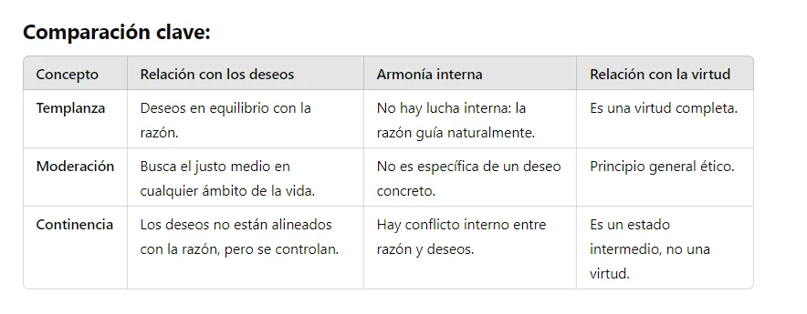
1. En la ética de Aristóteles, la templanza es la virtud ideal, ya que implica un dominio pleno (equilibrio o autocontrol) de los deseos y placeres, sin conflictos internos (porque sus deseos están alineados o armonizados con lo que la razón considera correcto). Especialmente lo relacionado con lo físico, como la comida, bebida y placer sexual. El temperante desea lo correcto en la medida adecuada, sin excesos ni carencias, y actúa en consecuencia sin lucha interna. Una persona templada no siente una atracción excesiva por comer en exceso, sino que desea alimentos de manera equilibrada y actúa con naturalidad al respecto.
2. La moderación, es también una virtud ideal (pero no específica), que guía todas las virtudes hacia el justo medio o equilibrio. Por eso, se trata de un término más general que abarca cualquier aspecto de la vida práctica (obrar). El justo medio se aplica a todas las virtudes, incluida la templanza.
1. Mientras la templanza se refiere específicamente al control de los placeres corporales,
2. la moderación puede abarcar otros ámbitos de la vida, como el comportamiento social o las emociones. Una persona moderada puede evitar tanto la timidez como la audacia extrema (atrevido) en su comportamiento social, actuando en el punto medio.
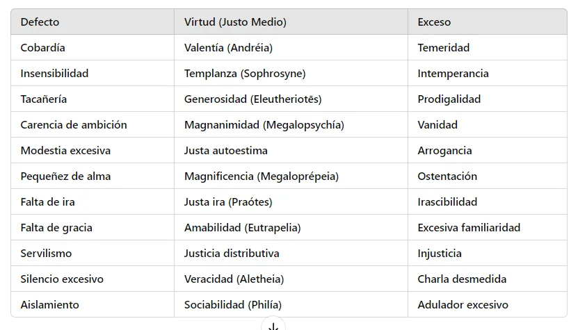
2. Magnanimidad
1. La magnanimidad: disposición del alma que impulsa a una persona a aspirar a grandes cosas de acuerdo con su valor y méritos. Es, literalmente, "grandeza de alma" (μεγαλοψυχία, megalopsychía en griego): es consciente de su valía y busca cosas nobles y elevadas, pero siempre de manera adecuada a sus capacidades y méritos.
2. La magnanimidad como "justo medio" o equilibrio entre dos extremos:
1. Exceso Hybris: (vanidad, arrogancia, soberbia). La persona que aspira a cosas grandes sin tener los méritos para alcanzarlas. Implica actuar con desprecio hacia los demás, transgrediendo límites éticos o sociales, y buscando imponerse o humillar. Sinónimo: orgullo excesivo o la pretensión desmedida.
2. Defecto (falta de ambición o pusilanimidad): La persona que no reconoce su verdadero valor o capacidad y, por tanto, no aspira a lo que es capaz de lograr (falta de valor para lograr cosas).
3. ¿Qué implica la magnanimidad?
1. Humildad acorde a la grandeza: Aunque el magnánimo tiene una alta opinión de sí mismo, no es arrogante ni vanidoso. Su autoestima está basada en un juicio justo sobre lo que realmente merece.
2. Virtud completa: Aristóteles considera que la magnanimidad no puede existir sin las demás virtudes éticas. Una persona magnánima debe ser justa, valiente, moderada, etc., ya que las grandes acciones requieren estas cualidades.
3. Virtud (Justa indignación / Nemesis): Sentir pesar o indignación cuando alguien obtiene un bien inmerecido, es decir, se sufre ante la buena fortuna no merecida de otros, pero no ante aquella que sea legítima o acorde a sus méritos.
1. Exceso (Envidia / Phthónos): Sentir dolor no sólo ante la buena fortuna inmerecida de otros, sino ante cualquier tipo de buena fortuna ajena, incluso si es merecida. El envidioso sufre al ver a otros prosperar sin discriminación alguna.
2. Defecto (Malicia): No sentir dolor ni siquiera ante la buena fortuna inmerecida de otros (ante las injusticias) e, incluso, experimentar placer ante su desgracia. En este extremo se peca por carecer de la respuesta moral adecuada a las injusticias de la fortuna, llegando a gozar con la adversidad ajena.
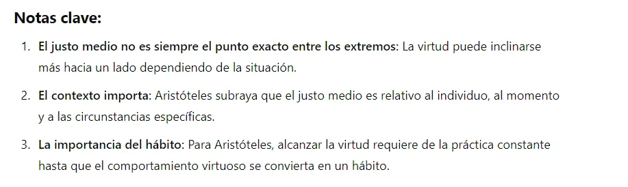
3. La continencia, aunque positiva, refleja un estado inferior al de la templanza porque implica una lucha interna constante, mostrando que la armonía entre razón y deseo aún no se ha alcanzado. La persona continente actúa conforme a la razón, aunque sus deseos tiendan hacia lo contrario. A diferencia del temperante, el continente no ha alcanzado la armonía plena entre la razón y el deseo, pero se esfuerza por actuar correctamente. La continencia es un estado intermedio entre la virtud templanza y el vicio (intemperancia o incontinencia).
El continente sufre tensiones internas, pero logra someter sus impulsos al juicio de la razón. Una persona continente puede sentir una fuerte tentación de comer en exceso, pero logra resistir esa inclinación y actuar conforme a lo que sabe que es mejor.
3. Esto significa que, para ser prudente, para ver el fin (bueno*), es necesario tener la parte conativa del alma bien dispuesta, es decir, moderada por las virtudes éticas: ser justo, fuerte y templado. Y por eso, dice el texto de Aristóteles que la moderación (mejor, la continencia) es la salvaguarda de la prudencia.
1. Dice que salvaguarda a la prudencia y no a la ciencia, porque en los juicios teóricos no hay una ordenación a fines y, por tanto, los aspectos conativos, el dolor o el placer, no influyen en tales actividades. Tanto el avaro como el generoso, el continente como el incontinente sabe que dos más dos son cuatro, o que el electrón tiene carga negativa.
2. Por eso, Aristóteles insiste en que el fin de la acción es punto de arranque de ella, o sea, su principio. Y por eso, si el vicio destruye la percepción del fin, y el vicioso ya no ve la necesidad de perseguir el bien, toda su acción estará viciada de raíz, será, pues, irracional o insensata.
2. Para Platón, la ética tiene entre sus funciones más importantes la de purificar al alma de las pasiones corporales con objeto de regresar al mundo de las ideas al que pertenece. La ética platónica se orienta, por tanto, al mundo inteligible y tiene un componente ascético. Sin embargo, esto no lo encontramos en Aristóteles quien, rechazando el dualismo platónico, nos ofrece una visión integrada de cuerpo y alma.
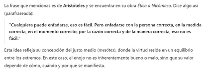
3. La ética aristotélica se orienta a la vida en este mundo. Para Aristóteles, los impulsos (emociones) y los deseos corporales no son malos en sí mismos, y en cierta medida son necesarios. En vez de reprimirlos o suprimirlos, lo que hay que hacer es educarlos y moderarlos, pues, como el propio autor explica, en cada uno de ellos hay un grado conveniente, manera conveniente y objeto conveniente. ). Se trata de dirigidas hacia fines correctos para vivir una vida virtuosa y alcanzar la felicidad (eudaimonía). Además, educar la voluntad , no solo modera los impulsos, sino que permite ser consciente, a su vez, de que ciertas actividades pueden ser convenientes a largo plazo, aunque no reporten un placer directo o inmediato (Prudencia*).
🚨 Aristóteles sostiene que tanto los impulsos o emociones, como los deseos corporales, son naturales, pero necesitan ser regulados por la razón práctica (la virtud) para alcanzar una vida equilibrada y virtuosa. El exceso o la falta de control sobre estas inclinaciones puede llevar a vicios, mientras que el término medio representa la virtud.
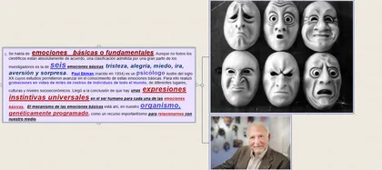
Las emociones y los sentimientos son conceptos a menudo confundidos en el lenguaje cotidiano, pero en psicología se distinguen claramente. Las emociones son respuestas automáticas e involuntarias del cuerpo ante un estímulo, mientras que los sentimientos son la interpretación consciente y subjetiva de esas emociones.
1. En resumen, las emociones son como "alarmas" del cuerpo que nos preparan para actuar, mientras que los sentimientos son la "historia" que construimos en nuestra mente a partir de ellas.
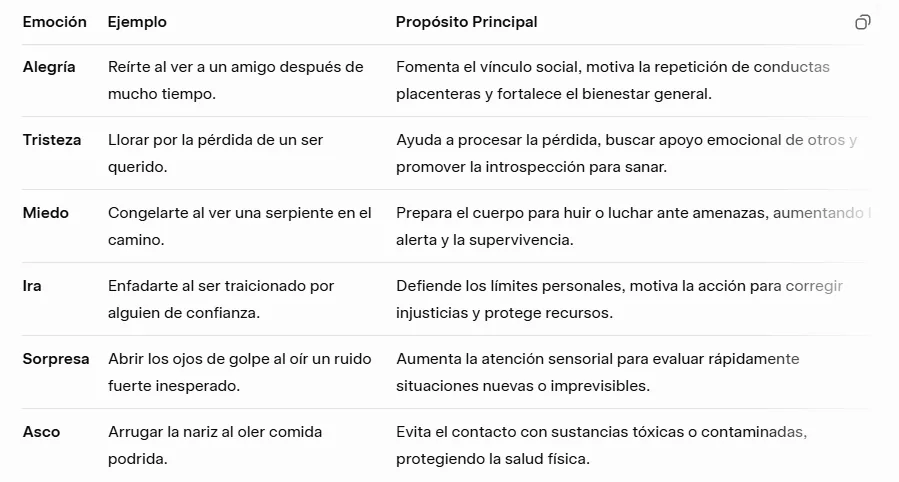
2. A continuación, te detallo las principales diferencias en una tabla comparativa para mayor claridad:
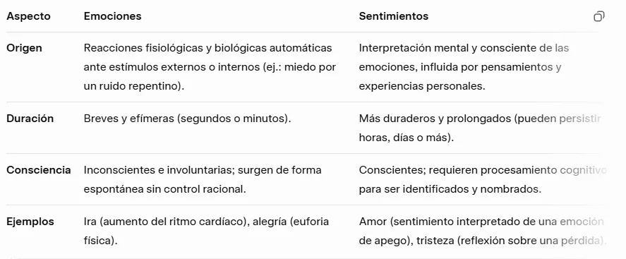
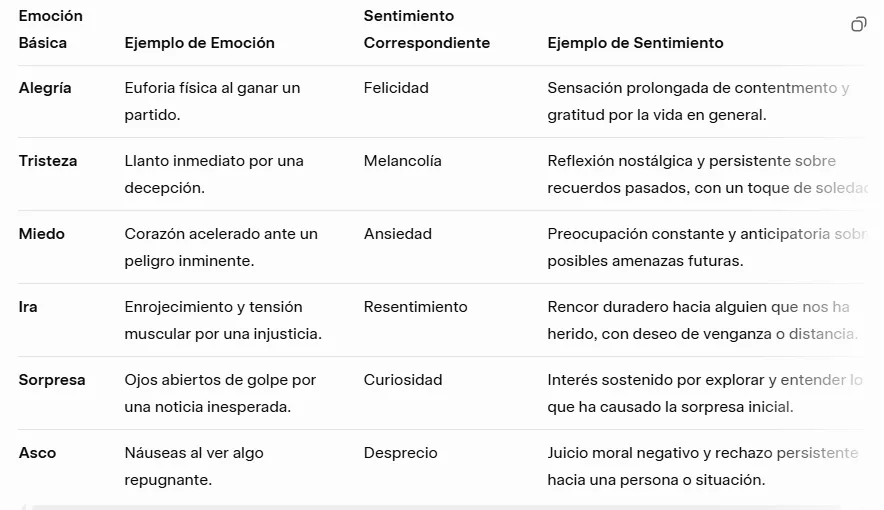
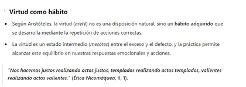
👓 4. En resumen, la postura de Aristóteles implica desarrollar buenos hábitos de acción para obedecer esa regla. La bondad del carácter es, por tanto, una capacidad, o potencia humana, como la llama Aristóteles, que depende no solo del conocimiento sino también de la voluntad y del hábito* o experiencia práctica para que se desarrolle. Es un aprendizaje que requiere práctica y tiempo. Platón, por el contrario, consideraba la virtud como innata o accesible mediante el conocimiento.
1. En cierto modo, la ética platónica también es teleológica (finalista) en cuanto considera a la Idea de Bien como aquel fin al que debe tender toda la realidad y que hace posible la existencia del bien parcial en este mundo. Pero el bien platónico es inalcanzable del todo en este mundo. Por contra, Aristóteles se propone estudiar exclusivamente cuál es el bien del hombre en este mundo, realizando una investigación más empírica sobre las necesidades concretas y variadas* del ser humano.
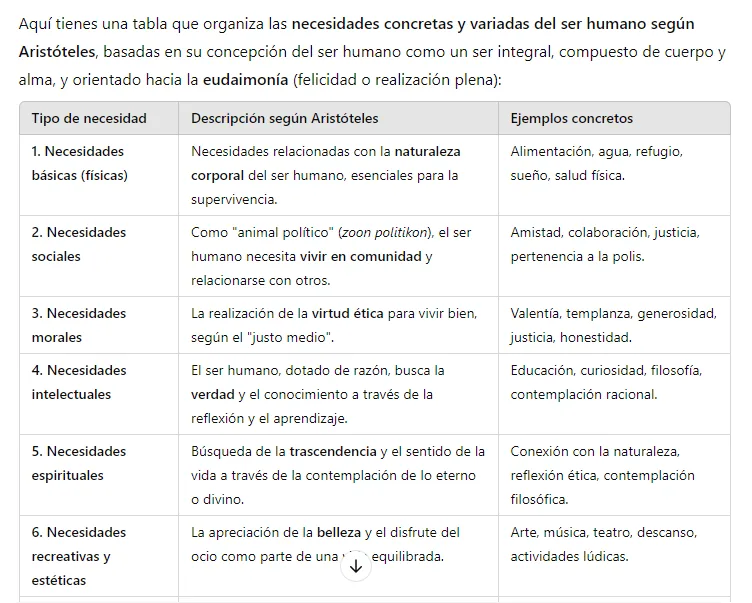
👎 Importancia de la amistad
En la Ética Nicomáquea, Aristóteles destaca la amistad (philia) como un elemento esencial para la buena vida y el florecimiento humano (eudaimonía). Esta no es una consideración marginal, sino que ocupa un lugar central en su reflexión ética, al punto de que dedica dos libros completos a su análisis. La importancia que el filósofo atribuye a la amistad no se limita a un mero vínculo social agradable, sino que se enraíza en la propia concepción de la virtud y de la vida realizada plenamente.
Para Aristóteles, el ser humano es por naturaleza un ser político y social, destinado a vivir en comunidad. La amistad, en este contexto, se convierte en la manifestación más profunda y armónica de la sociabilidad humana. Si bien las relaciones utilitarias o placenteras pueden formar parte de la vida cotidiana, no satisfacen plenamente el anhelo de sentido que el hombre virtuoso experimenta. Las amistades basadas en la virtud —aquellas en las que ambos amigos se reconocen mutua bondad y se desean el bien por sí mismo— alcanzan la mayor profundidad y significación. En este tipo de relación, los amigos comparten valores, metas y un proyecto ético que va más allá de las circunstancias temporales. Cada uno ve en el otro un “otro yo”, un espejo donde se reconocen la virtud, la nobleza de carácter y la aspiración al bien.
La amistad virtuosa ejerce, además, una función pedagógica y moral. En la intimidad del vínculo, los amigos se motivan mutuamente a vivir conforme a la razón práctica y el justo medio. Cuando uno se desvía, el otro puede exhortarlo a retomar el camino de la virtud. Así, la amistad no sólo refleja el estado moral del individuo, sino que contribuye activamente a su perfeccionamiento. Esta alianza ética mitiga la soledad interna y la fragilidad humana, posibilitando que el hombre encare la vida con mayor fortaleza, prudencia y alegría.
La plenitud de la vida aristotélica, es decir, la consecución de la eudaimonía, no es un estado exclusivamente introspectivo o solitario. Por el contrario, requiere de otros para su pleno florecimiento. Sin la presencia de verdaderos amigos, el bien propio carece de una dimensión expansiva y relacional; se convierte en una satisfacción incompleta. La amistad, al ser la encarnación misma de la bondad compartida, nutre y sostiene la excelencia moral. En ella el individuo no sólo busca su propio bien, sino que se alegra en el bien del otro, produciendo un círculo virtuoso que potencia la realización de la vida humana en su totalidad.
En conclusión, para Aristóteles la amistad no es un adorno accesorio de la existencia, sino un ingrediente fundamental de la vida lograda. A través de la amistad virtuosa, el ser humano trasciende el individualismo, crece en sabiduría y fortalece sus convicciones éticas, alcanzando así una plenitud más profunda y duradera.
2. La ética aristotélica es finalista porque Aristóteles afirma que la conducta humana, como todo en la naturaleza, tiende a un fin (objetivo) y este objetivo, en cuanto deseable, es considerado un bien.
El fin o bien de cada cosa consiste en la realización, en la actualización de su forma o función propia (la del ojo en ver…) y cada cual es feliz cumpliendo bien su misión (el músico cuando toca bien, el escultor cuando construye objetos perfectos…)
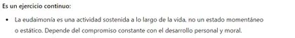
3. Pero lo cierto es que hay fines que a su vez son medios para alcanzar fines posteriores. Aristóteles se pregunta entonces cuál es ese fin último que da sentido a la vida humana. Ese fin último, el bien supremo humano, lo identifica con la felicidad o el bienestar* (“eudaimonia”). La ética de Aristóteles es, por tanto, una ética teleológica y eudaimonista.
4. Ahora bien, aunque todos están de acuerdo en que lo que buscamos en último término es la eudaimonía, la vida plena y feliz, no hay acuerdo a la hora de señalar en qué consiste o qué acciones nos proporcionarán ese fin último. Aristóteles procede a analizar ahora las distintas opiniones sobre la felicidad.
1. Para la mayoría, la felicidad consiste en la vida placentera, pero el Estagirita piensa que centrar la vida en los placeres nos hace esclavos y no nos diferencia de los animales.
Si bien Aristóteles admite que el placer acompaña a la eudaimonía, no la identifica con ella. El placer es un efecto colateral de vivir una vida virtuosa, no la esencia de la felicidad.
2. Para otros, la felicidad es el honor, el éxito social, sin embargo esto depende de que otros individuos nos lo den.
3. Con respecto a la riqueza, Aristóteles considera que los bienes materiales son instrumentos, medios, no fines.
4. Martin Seligman
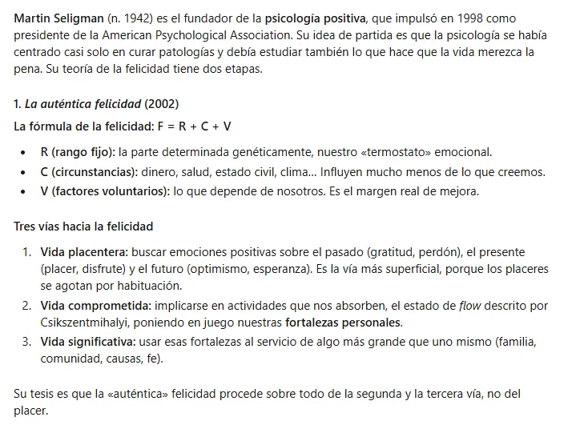
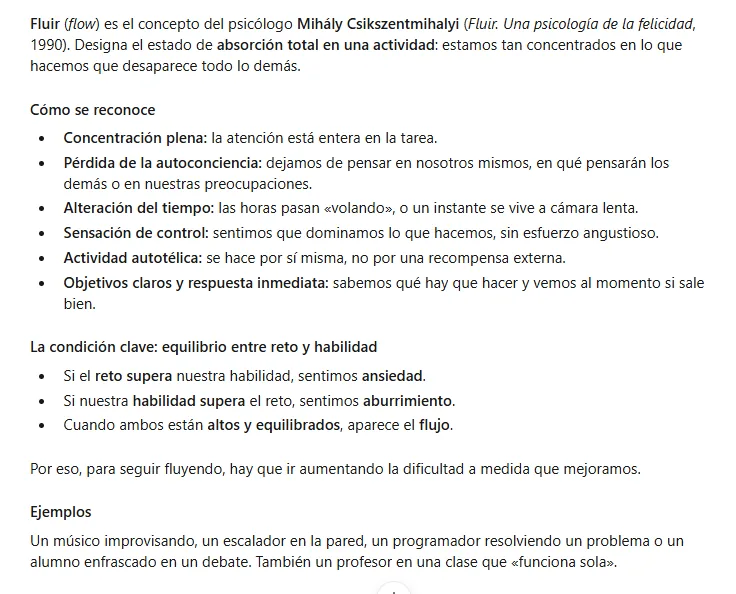
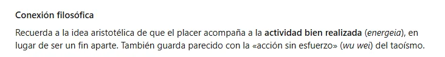
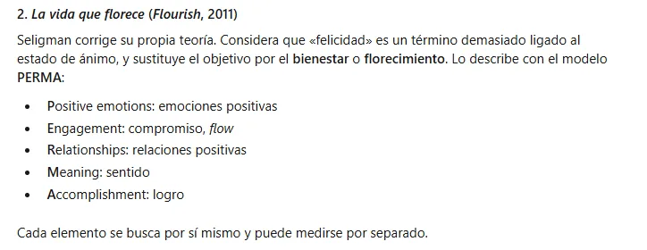
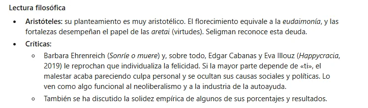
5. Aristóteles considera que todo lo anterior acompaña a la felicidad y es, en su justa medida, importante para obtenerla pero no es el ingrediente fundamental. En efecto, la felicidad debe consistir en una actividad del alma , por lo que no tiene una relación fundamental con los bienes exteriores, ya que estos dependen de la cambiante fortuna.
1. La fortuna representa los eventos o circunstancias que ocurren de manera accidental o inesperada, influyendo en la vida humana de manera significativa, aunque escapen al control directo de la voluntad o la razón. No es un evento totalmente aleatorio, pero tampoco está dirigido por una necesidad o un propósito racional. Se produce en el marco de lo que podría haber sucedido de otra manera (contingente).
2. Su influencia en la vida ética:
1. Aristóteles reconoce que la fortuna puede influir en la felicidad (eudaimonía), ya que puede proporcionar bienes externos como riqueza, salud, o éxito.
2. Sin embargo, la felicidad no depende exclusivamente de la fortuna. Lo más importante para Aristóteles es vivir conforme a la virtud, ya que esta última es más estable y está bajo el control del individuo. La fortuna puede otorgar o quitar estos bienes, pero la virtud es lo que permite aprovecharlos de manera correcta o superar su ausencia.
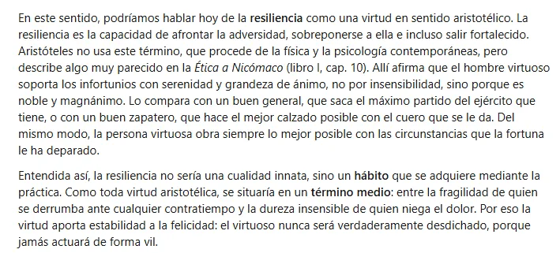
3. La prudencia (phronesis), como virtud práctica, permite al ser humano manejar de manera razonable las circunstancias que dependen de la fortuna, encontrando formas de actuar adecuadas en situaciones inesperadas.
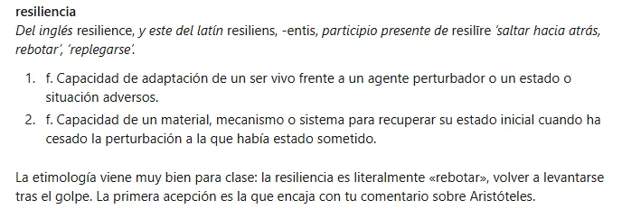
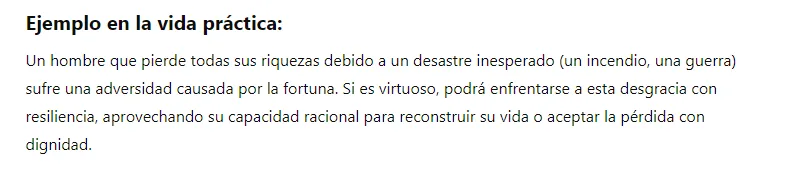
5. Se propone averiguar ahora cuál es la función característica del ser humano, esto es, ¿qué es lo que solo el hombre puede hacer? El autor estima que la felicidad tiene que consistir en el perfeccionamiento de aquella función que caracteriza al ser humano, en la realización o actualización plena de su forma o esencia.
El alma humana tiene distintas funciones.
1. La función vegetativa (alimentación, crecimiento y reproducción) es común a todos los vivientes.
2. La función sensitiva (sensaciones, placer y dolor, deseos, imaginación, memoria y, en algunos casos, incluso sentimientos) la tienen también los animales.
3. Pero sólo los seres humanos estamos dotados de función intelectiva, racional, con capacidad de conocer, por lo que esta es nuestra función específica. La felicidad se alcanza con el perfeccionamiento o el desarrollo pleno de nuestra función específica que es la racional. El cultivo de la racionalidad incide también positivamente en el bienestar de las otras dos funciones.
La ciencia moderna ha confirmado la conexión profunda entre el cuerpo, las emociones y la mente racional. Veamos cómo la racionalidad conecta con ambas funciones. Un ejemplo más amplio lo encontramos en los efectos del autocontrol, que es una habilidad racional fundamental:
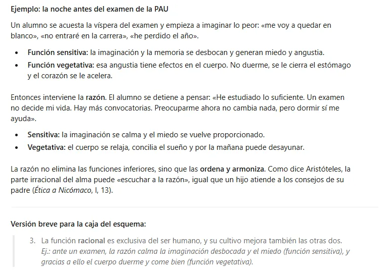
Emocional y vegetativo: Una persona con autocontrol racional puede resistir la tentación de comer en exceso (función vegetativa) cuando se siente ansiosa o triste (función emocional). Esta elección no solo mejora la salud física, sino que también reduce el círculo vicioso de emociones negativas relacionadas con la culpa.
🚨 6. Ampliación a los 2 primeros puntos
🚨 1. EL VIVIR BIEN COMO OBRA DE LA RAZÓN
🚨 Virtud y felicidad son los dos conceptos fundamentales de la ética aristotélica y son tratados ampliamente en la Ética nicomáquea. Aristóteles redactó esta obra durante su época del Liceo, cuando ya había elaborado gran parte de su filosofía teórica. Por eso, para entender la ética de Aristóteles hay que tener en cuenta conceptos fundamentales de su metafísica y, muy especialmente de su antropología: la idea aristotélica de hombre. Aristóteles sostiene que esto que llamamos hombre es un compuesto de cuerpo y alma; es decir, de cuerpo y vida*. En rigor, no se trata de un dualismo sino de una dualidad, pues, para Aristóteles, cada ser humano es una única realidad: un cuerpo orgánico viviente. Ahora bien, es claro que los dos principios no están al mismo nivel.
1. Si cada uno de nosotros fuera principalmente su cuerpo, resultaría que cada cierto tiempo cada uno dejaría de ser sí mismo para pasar a ser otro, puesto que nuestra materia cambia continuamente y en poco tiempo es totalmente sustituida por otra (cada diez años aproximadamente desechamos todas nuestras células y las sustituimos por otras).
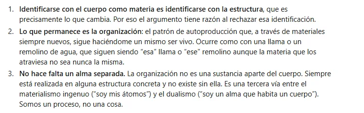
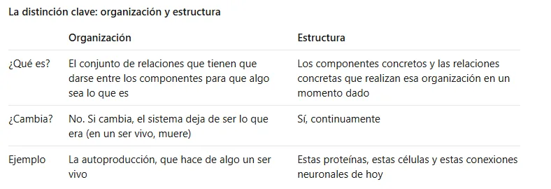
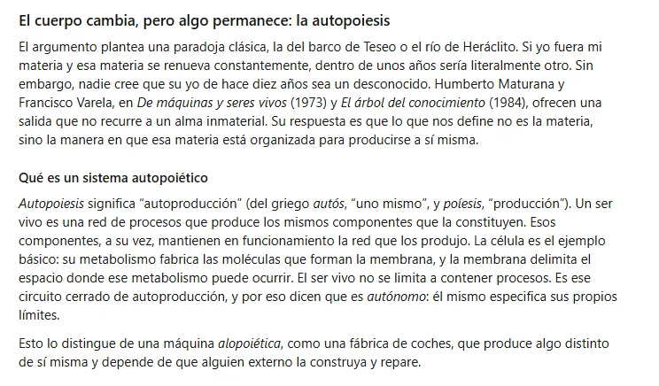
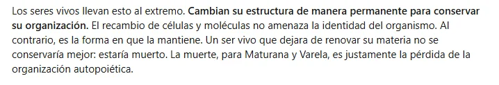
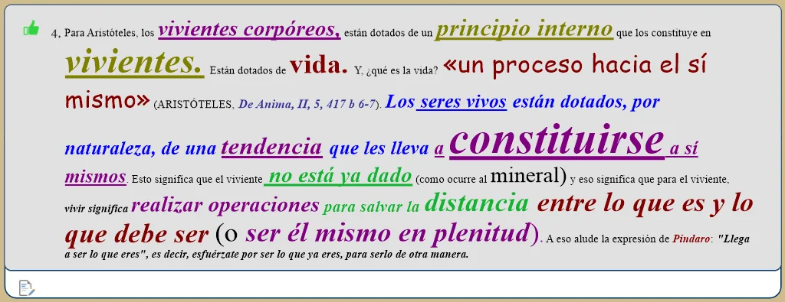
2. La otra “parte” nuestra, nuestra vida -el acto de vivir-, es lo que permanece siempre, y siempre es la misma: es la misma vida, mi propio y único vivir. Por eso, lo que buscamos es conservar la vida, renovando nuestro cuerpo continuamente o incluso eliminando sus partes que perjudican la vida (nos amputan el brazo gangrenado). Esto es lo que indica Aristóteles cuando sostiene que cada uno de nosotros somos principalmente nuestra vida, nuestro vivir. Dentro del alma -de nuestros actos vitales-, Aristóteles distingue cuatro partes:
1. la vegetativa (crecer, alimentarse, dirigir, respirar…),
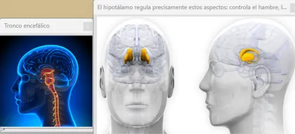
1. El tronco encefálico y el hipotálamo controlan funciones autónomas como la respiración, el ritmo cardíaco y el metabolismo, similares a las funciones vitales básicas del alma vegetativa.
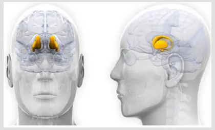
2. El hipotálamo regula precisamente estos aspectos: controla el hambre, la sed, la temperatura corporal, el metabolismo, el ciclo sueño-vigilia y respuestas hormonales autónomas relacionadas con la supervivencia básica.
2. la sensitiva (ver, oír, oler..),
Responsable de la percepción sensorial y la sensibilidad al entorno.
Corteza Sensorial y Tálamo
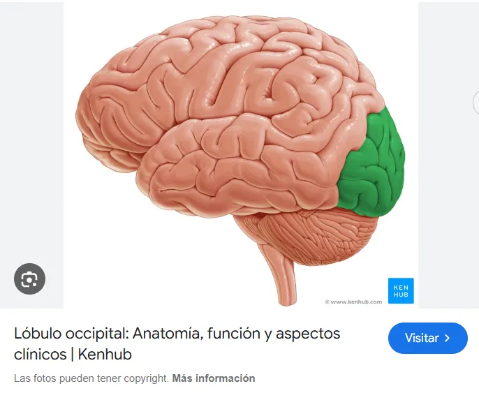
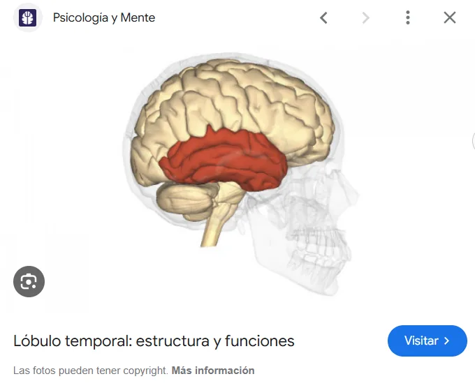
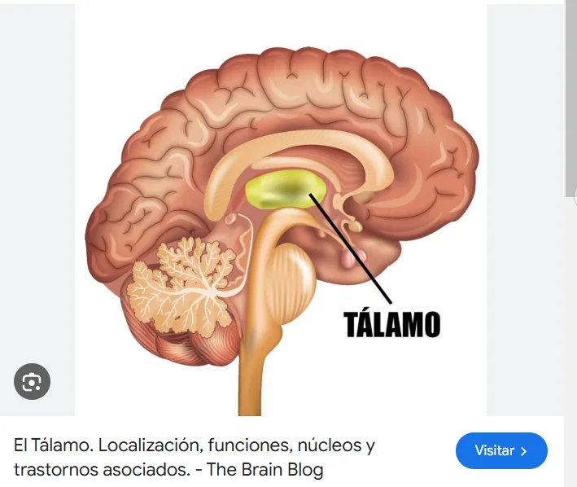
3. la conativa (tendemos al placer, huimos del dolor, tenemos sentimientos…) Responsable de los deseos, emociones y motivaciones que impulsan el movimiento.
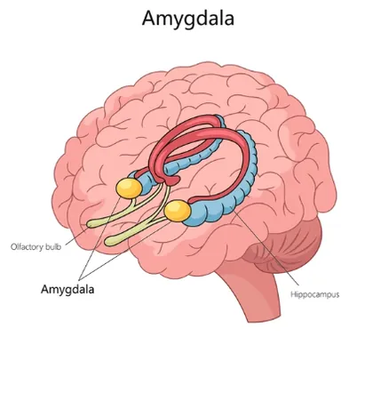
Sistema Límbico (incluyendo Amígdala e Hipocampo). Este sistema gestiona emociones, miedos, placeres y motivaciones,
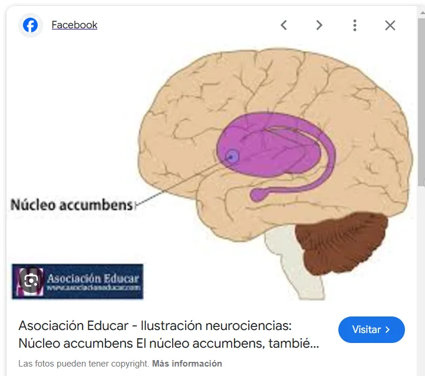
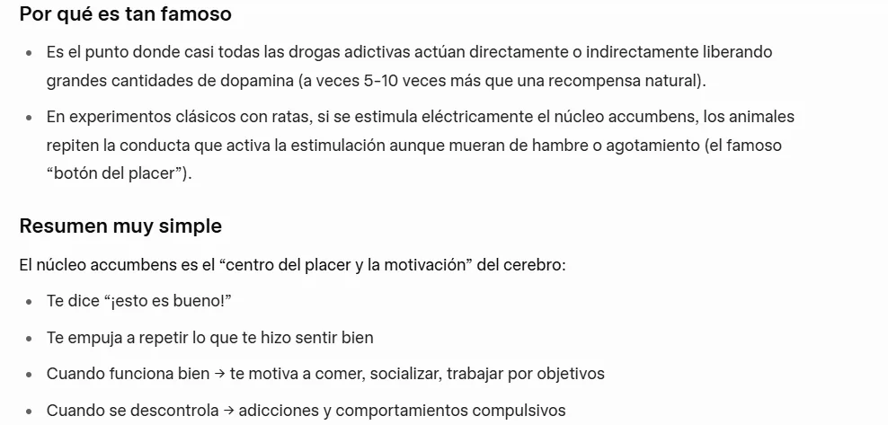
4. y la intelectiva (pensar). Es el pensamiento, el conocimiento, y todo lo que eso implica lo que caracteriza al ser humano, lo que es él mismo en cuanto humano (no en cuanto animal o meramente viviente).
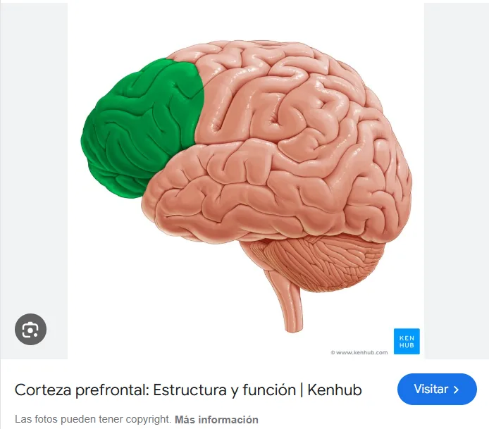
5. Tabla
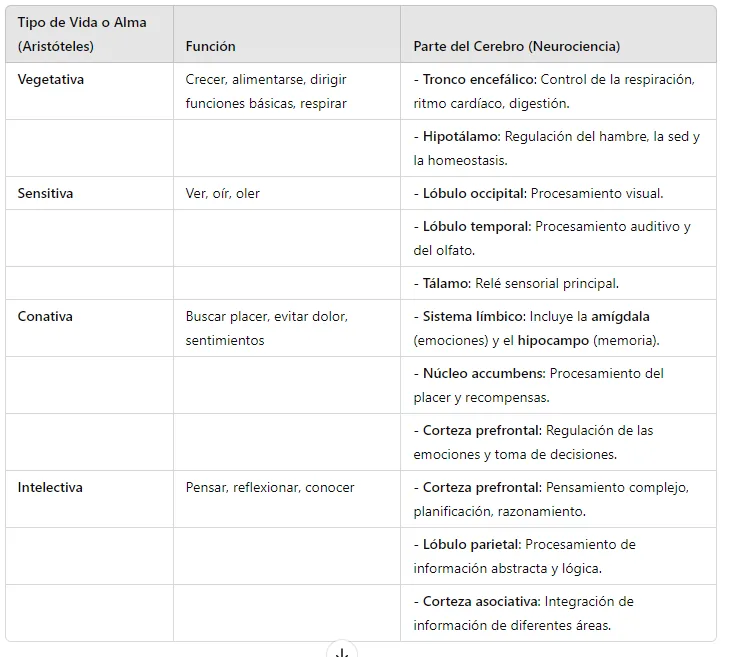
👓 Estas correspondencias ilustran cómo la neurociencia ve el alma aristotélica como una jerarquía emergente: las funciones vegetativas son las más básicas y subcorticales, mientras que las intelectivas dependen de capas corticales superiores, integrando las inferiores. Por ejemplo, el pensamiento racional (intelectiva) modula impulsos apetitivo-sensitivos, similar a cómo Aristóteles describe la virtud como equilibrio. Sin embargo, la neurociencia enfatiza que no hay una "sede única" del alma, sino redes distribuidas, y fenómenos como la plasticidad cerebral permiten compensaciones tras lesiones.
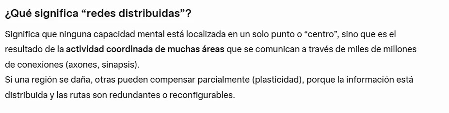
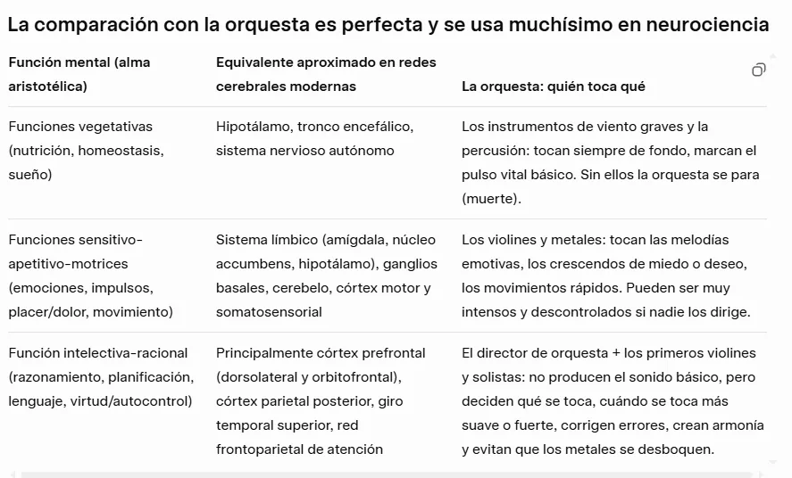
🚨 6. Los niveles vitales se estratifican, desde esta perspectiva, por el modo en que el viviente realiza sus operaciones vitales.
1. . Las operaciones vitales básicas son nutrición, y reproducción.
1. La nutrición es en vista a la construcción del propio cuerpo o crecimiento y ésta a su vez, en vistas a la reproducción.
1. La nutrición y crecimiento afectan a la vida del viviente que se nutre y crece;
2. la reproducción es operación realizada por el viviente pero que interesa a la especie:
…en la nutrición le va la vida al individuo; en la reproducción, a la especie.
2. El primer nivel vital es el vegetativo. El vegetal realiza las operaciones de nutrición, crecimiento y reproducción, pero de un modo inconsciente: lo hace, pero no sabe que lo hace. Si se dan las condiciones (humedad, luminosidad, etc) para la vida de esa planta, entonces se desarrolla, en caso contrario, muere.
2. En la vida sensitiva o animal se realizan las mismas operaciones vitales. Pero aparece la mediación cognoscitiva. El animal, para realizar sus actividades vitales, necesita la guía del conocimiento. El viviente sensitivo tiene que saber que tiene hambre (tiene que sentir hambre y sentir-se hambriento), tiene que saber qué puede saciar su hambre y tiene que ser capaz de alcanzar el alimento.
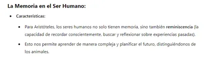
Eso supone, como es fácil de ver, una coordinación entre la estructura perceptiva y la locomotora. Supone también, una cierta subjetividad: un saber del mundo y de sí mismo como distintos; y esto implica una cierta vivencia de sí, una vida afectiva o sentimental más o menos rica en función de que se trate de animales más o menos desarrollados: Aristóteles es muy minucioso al respecto, ya que distingue animales con oído o sin él, con capacidad de acumular nuevas imágenes (es decir, con memoria*) o sin ella, lo cual implica que puedan o no aprender, etc.
3. Finalmente, aún en la psicología, el hombre se caracteriza porque en él no hay mediación cognoscitiva. En el hombre hay principiación cognoscitiva. Esto es de una trascendencia enorme, y significa que en el hombre el principio de su acción es el entendimiento.
1. No es que el hombre no necesite comer o no sienta el impulso sexual, es que eso que en el animal es un impulso específico que el individuo sólo tiene que cumplir, el hombre ha de proponérselo a sí mismo como fin y, en cierto sentido, inventarlo, construirlo.
2. La antropología reciente ha expresado esto mismo diciendo que el animal tiene medio, entorno o mundo circundante (Unwelt), mientras que el hombre tiene mundo (Welt), mundo significativo donde los significados los pone él mismo. (Max Scheler, El puesto del hombre en el cosmos, 1928)
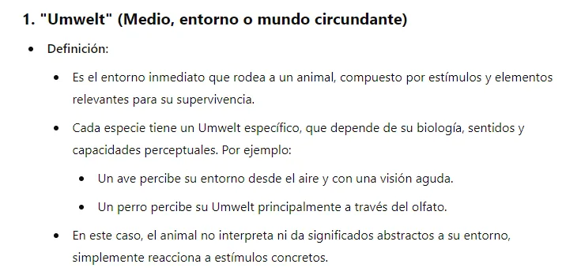
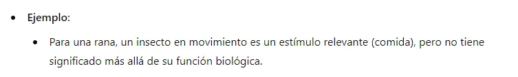
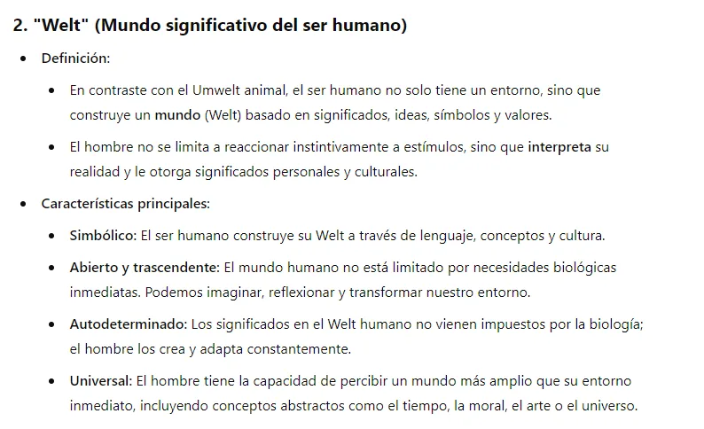
3. El hombre se nutre, pero ha de inventar la gastronomía, ha de inventar el modo. Por eso, hay alimentos que a unos seres humanos les resultan exquisitos (o, al menos, aceptables) y a otros les repugnan. Si hablamos de cuestiones más complejas como tendencia sexual, estructuras de parentesco, etc., se hace cada vez más patente que el hombre construye su mundo desde el pensamiento. Y, por eso, en un cierto sentido, cada hombre se enfrenta a la tarea de asumir cognoscitivamente su herencia cultural y decidir cómo va a orientar su vida: ese es el punto de inicio de la cultura, la moral, etc.
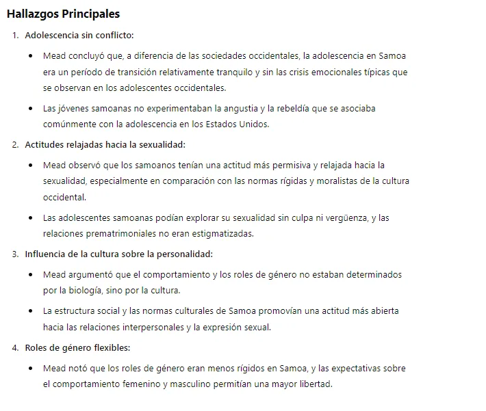
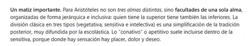
👓 3. Aplicando esto a la ética, Aristóteles sostiene que el hombre bueno “actúa mediante la parte racional de sí mismo, que parece constituir a cada uno de nosotros” (Eth. Nic. IX, 4, 1166 a 16-17); “está pues claro que cada uno de nosotros es sobre todo intelecto y que la persona moralmente idónea lo ama sobre todas las cosas” (Eth. Nic. IX, 8, 1169 a 2-3.). En suma, se trata de que la razón es la guía de todas nuestras acciones. Si no siguiésemos a la razón, obedeceríamos algo que no es lo propio de nosotros mismos, algo en definitiva ajeno a cada uno de nosotros; viviríamos una vida heterónoma.
En consecuencia, Aristóteles considerará que los bienes (o “valores”) auténticos
1. no pueden ser ni los externos (como las riquezas), que afectan sólo de manera tangencial* al hombre,
2. ni los corporales (como los placeres), que no se refieren al verdadero ser del hombre,
3. sino los del alma intelectiva, puesto que lo que caracteriza al hombre es su intelecto.
2. LA EUDAIMONÍA (PLENITUD-FELICIDAD)
1. Aristóteles comienza su ética planteándose un problema que se discutía en la Academia. Ya que la ética es la doctrina acerca del vivir bien, la cuestión que hay que esclarecer primariamente es qué es lo bueno para el hombre, cuál es el bien supremo o fin que busca a través de toda sus acciones.
2. Todos están de acuerdo en que lo que buscamos en último término es la eudaimonía (felicidad, plenitud de vida). Sin embargo, ese acuerdo es meramente formal, puesto que las diferencias surgen al determinar las acciones que nos proporcionaran ese último fin, esa plenitud-felicidad.
1. La mayoría de las persona creen que la felicidad se encuentra en el placer y goce. Pero una vida dedicada a los placeres es una vida que hace “semejante a los esclavos” y es una “existencia digna de las bestias” (Eth. Nic. I, 5, 1095 b 20).
2. Otros sitúan la felicidad en el honor, en la fama. Esto es lo que buscan los que se dedican profesionalmente a la vida política o a las artes. No puede ser el fin último que buscamos puesto que es algo exterior: “Todo indica que el honor depende más bien del que lo confiere que del que lo recibe; nosotros, en cambio consideramos que el bien es algo propio y difícil de arrebatar” (Eth. Nic. I, 5, 1095 b 24-26).
3. El tipo de vida dedicado a amasar riquezas es la más absurda e inauténtica, porque equivale a buscar cosas que tienen razón de medios, pero no de fines.
4. El bien del hombre consistirá principalmente en la acción que es peculiar de él y que sólo él sabe desarrollar, así como el bien de cada cosa consiste en la obra que es peculiar de tal cosa. La obra del ojo es ver, la del oído, oír, etc. ¿Cuál es la obra del hombre? : la actividad del alma conforme a la razón.
1) No puede ser el simple vivir, puesto que el vivir es así mismo propio de todos los seres vegetales.
2) Tampoco puede ser el sentir, puesto que el sentir es común de todos los animales.
3) Sólo queda, pues, que la obra peculiar del hombre sea la de la razón y la actividad según la razón. El verdadero bien del hombre consiste en esta obra o actividad de la razón y más precisamente en la realización perfecta de esta actividad.
1. Pues bien, esa actividad del alma según la razón no sólo es pensar -y demás actividades racionales-, sino toda acción humana susceptible de caer bajo la dirección de la razón. Es decir, tenemos actividades como el respirar que no podemos dejar de hacerlas, pero en cambio podemos comer o no, aunque tengamos hambre. Se trata, pues, de obrar no bajo una instancia ajena, sino según lo que somos nosotros mismos, bajo la razón, puesto que somos seres racionales.
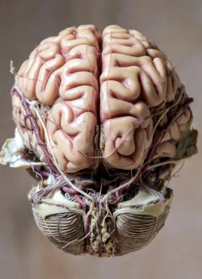
2. Esta acción guiada por la razón es lo que Aristóteles llama acción virtuosa. Lo cual nos remite al otro concepto básico de su ética: la virtud (areté).
La virtud es concebida como un hábito que perfecciona aquello de que es virtud, haciendo que ejecute bien su operación, es decir, lo mismo es decir virtud de algo que decir que ese algo realiza a la perfección su función propia.
👓 Por eso Aristóteles señala que en la ética hemos de tratar de la virtud humana: «toda virtud perfecciona la condición de aquello de lo cual es virtud y hace que ejecute bien su operación, por ejemplo, la excelencia [areté] del ojo hace bueno al ojo y su función (pues vemos bien por la excelencia del ojo); asimismo la excelencia del caballo hace bueno al caballo y lo capacita para correr, para llevar al jinete y afrontar a los enemigos. Si esto es así en todos los casos, la virtud del hombre será también el hábito por el cual el hombre se hace bueno y por el cual ejecuta bien su función propia».
Hemos visto que para Aristóteles la felicidad no puede consistir en el honor ya que el honor no es el bien realizable y ni siquiera depende del sujeto, sino de los otros. Y sería absurdo que nuestra felicidad dependiese de otros. Sin embargo, sí es posible plantear no el honor, sino el merecimiento: ser digno de honor. Y eso es la virtud. La virtud hace que quien la posea sea digno de honor. Ahí entronca el tratado de la virtud que ocupará los libros I-VI. Así se entiende que Aristóteles afirme: «Puesto que la felicidad es una actividad del alma según la virtud perfecta, hay que tratar de la virtud, pues acaso así consideraremos mejor lo referente a la felicidad».
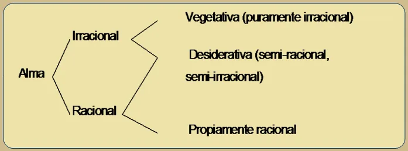
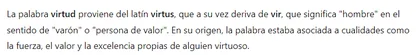
1. El perfeccionamiento o excelencia de las funciones humanas se denomina también virtud. La virtud se consigue con la puesta en práctica de manera habitual de una capacidad o potencia humana. De ahí que Aristóteles defina las virtudes como “disposiciones”, queriendo referirse con ello a las tendencias estables a realizar un determinado tipo de actos.
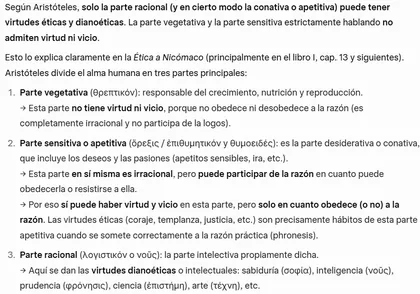
👍 2. Aristóteles distingue dos tipos de virtudes:
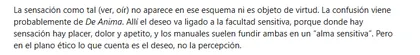
1. virtudes éticas o del carácter (valentía, la templanza, la generosidad y la justicia) que se corresponden con la parte desiderativa o conativa* (Irracional)
Aristóteles explica que llamamos sophrosýne a la templanza “porque preserva la prudencia”, jugando con sózein (salvar, conservar) y phrónesis.
2. y virtudes dianoéticas o intelectuales (inteligencia, sabiduría, ciencia, prudencia y arte) que se corresponden con la racional.
3. En cuanto a las virtudes intelectuales,
1. la prudencia o sabiduría práctica consiste en saber deliberar sobre cómo actuar en cada situación y nos permite, por tanto, encontrar el punto medio que se requiere para alcanzar las virtudes éticas.
1. Todas las virtudes morales requieren de deliberación para tomar la mejor decisión en una situación concreta. Esto es lo que se denomina prudencia (fronesis) que es requerida por todas las virtudes morales.
2. Aristóteles dice explícitamente que ninguna virtud ética (del carácter) se da plenamente sin la prudencia, y que la prudencia no existe sin las virtudes éticas (entre ellas la templanza o moderación). Quien es prudente (phrónimos) sí tiene necesariamente la virtud de la moderación (es templado), pero quien tiene la virtud de la moderación no necesariamente es prudente (puede ser “moderado” por razones equivocadas).
1. La persona continente actúa correctamente, pero no delibera correctamente ni elige el término medio por sí mismo como bueno. Lo elige por razones externas o por miedo al dolor posterior. Su alma no está en armonía: hay lucha interna. El templado (sṓphrōn) ni siquiera siente esas pasiones desordenadas o las siente muy débilmente; para él el término medio es placentero en sí mismo y lo elige porque lo ve como lo bello y bueno.
2. La prudencia exige que uno vea y elija el bien por sí mismo, no por consecuencias externas. Sin phrónesis, uno puede caer en una falsa moderación (por ejemplo, el que es “moderado” por insensibilidad o por miedo no es realmente templado).
2. Respecto al arte o técnica, se trata de un saber productivo, es decir, es una disposición que me permite producir objetos, ya sea un edificio o una obra de arte.
3. El resto de virtudes intelectuales (sabiduría, inteligencia y ciencia) se corresponden con un saber teórico consistente en la reflexión y el estudio de las causas y el orden de la realidad. Su desarrollo implica llevar una vida dedicada a la contemplación.
1. La vida contemplativa no tiene más utilidad que la de satisfacer el deseo de conocimiento humano, el cual es para Aristóteles gratificante en sí mismo. Es la más sublime actividad de la razón al dirigirse a los principios universales y eternos y conecta al ser humano con lo divino. Las virtudes contemplativas conllevan la realización máxima de la naturaleza racional del ser humano y, por tanto, la obtención de la felicidad más alta.
2. Ahora bien, el ser humano, puesto que posee otras funciones, como las sensitivas y vegetativas, también necesitará un desarrollo de las virtudes éticas y un bienestar moderado de estas otras dos funciones (salud, bienes, etc) para ser feliz.
4. DEDUCCIÓN DE LAS VIRTUDES A PARTIR DE LAS “PARTES DEL ALMA”
1. Hemos señalado que el alma, según Aristóteles, posee dos partes* que nos interesan especialmente, pues son capaces de virtud: la parte intelectiva y la parte conativa en cuanto cae bajo la intelectiva (VOLUNTAD).
2. Parte racional o intelectiva
1. La parte racional es la que mira al conocimiento, es decir, es la parte del alma que tiene como tarea el conocimiento de la realidad, la adquisición de la verdad.
2. Ahora bien, Aristóteles considera que, en la realidad, hay cosas o acontecimientos que son necesarios y otros que son contingentes.
1. Son necesarios lo que no pueden dejar de ser o ser de otro modo a como son. Por ejemplo, es necesario que Bucéfalo muera o que cuatro más tres sean siete.
2. Por el contrario, hay cosas o acontecimientos contingentes (no necesarios): los que pueden dejar de ser, ser de otro modo distinto a como son, o incluso podrían haber sido distintos a lo que fácticamente son. Por ejemplos, no es necesario que Teeteto haga la carrera de matemáticas o de filosofía; tampoco lo es que yo esté ahora sentado, pues podría haber estado de pie.
3. En consonancia con esa distinción, el alma intelectiva tiene dos partes principales:
1. la parte científica (epistemonikón).Lo que nosotros llamamos razón teórica.
2. y la parte deliberativa o calculadora (logistikón). Lo que denominamos razón práctica.
3. Cada una de estas partes ha de tener su virtud fundamental o perfección estable: la sabiduría (sophía) y la prudencia o sensatez (phrónesis) respectivamente. Estas son las dos virtudes dianoéticas principales.
1. La sabiduría mira al conocimiento de la realidad en cuanto tal, de los objetos necesarios que no pueden ser de otro modo a como son,
2. mientras que la prudencia mira al conocimiento de las cosas contingentes, de las que podemos hacer de un modo u otro.
4. Ahora bien, dentro del conocimiento teórico, Aristóteles señala que la sophía es una ciencia (epistéme) a la que se le une la intelección (noûs): ella es intelección y ciencia. Es decir, que el conocimiento teórico se desarrolla básicamente en dos momentos: la intelección (noûs) de los principios y la construcción de un cuerpo científico (epistéme o ciencia demostrativa). De este modo, tenemos que los tres hábitos dianoéticos teóricos son: sabiduría (sophía), intelección (noûs) y ciencia (epistéme). Aunque la sophía es, en realidad, un tipo de ciencia que contiene en sí no sólo un cuerpo científico, sino también la intelección y discusión de los principios.
La sofía (filosofía primera o metafísica) es la única ciencia que combina ambos niveles perfectamente:
1. Captamos por noûs que «el ser es» y que «existe un motor inmóvil separado» (principio último).
2. A partir de ahí, demostramos (epistēmē) las características de ese motor inmóvil (es acto puro, pensamiento de pensamiento, etc.).
A diferencia de la filosofía primera, ciencias como la geometría o la astronomía son epistēmē pura (parten de principios que se aceptan como evidentes, pero no llegan al nivel de los principios absolutamente primeros del ser en cuanto ser).
Quien tiene desarrollado el noûs capta estos principios con evidencia inmediata, sin necesidad de silogismo* o demostración
Definiciones esenciales indemostrables (axiomas): que el hombre es animal racional mortal, o que el triángulo es figura de tres lados. No se demuestran; se intuyen como verdaderas por sí mismas.
Principios propios de la geometría, pero no del ser en tanto que ser.
Es el conocimiento mediato, deductivo, que parte de esos principios indemostrables y llega a conclusiones necesarias mediante silogismos.
👎 Parte científica (razón teórica): 3 hábitos o virtudes dianoéticas teórias. (Lo necesario)
1. sabiduría (lo necesario): sophía
3. sofía o sabiduría teórica: episteme y nous orientada a los objetos más excelsos (los de la metafísica y matemáticas). Aquí el saber es dignificado por la sublimidad del objeto. La sabiduría es episteme (razón argumentativa, mediata) y nous (razón no argumentativa, inmediata). Por otra parte, los objetos necesarios, eternos, también están jerarquizados (hay unos que son más sublimes) y precisamente poseer la verdad sobre lo más elevado es también un carácter distintivo de la sofía.
2. la intelección de los principios (Nous)
2. noûs o razón intuitiva: captación inmediata de la evidencia. Como defiende Aristóteles en los Analíticos, si se quiere demostrar todo, no se demuestra nada. Es necesario que, además, de la argumentación (la ciencia), existan también los principios de la demostración. Esos principios serán “primeros, verdaderos, anteriores a la conclusión y causa de ella”. Se trata de verdades evidentes, con carácter fundante (toda otra verdad se apoya en ellos) y cuya captación no se hace argumentativamente sino inmediatamente. Poseer cognoscitivamente los principios es poseer la verdad, pero esta posesión de verdad no se hace por demostración, no se trata del hábito intelectual que hemos llamado ciencia. Se trata de un hábito de posesión de la verdad que Aristóteles denomina nous.
3. y la construcción de un cuerpo científico (epistéme o ciencia), para comprender las causas y principios fundamentales (leyes) de los fenómenos.
Episteme, o ciencia: “disposición gracias a la cual demostramos” y a la que conciernen las pruebas, es decir, la argumentación. La ciencia es comunicable por enseñanza y se ocupa de lo necesario y eterno.
5. En cuanto a la razón práctica, esto es, la actividad humana que se ocupa de lo contingente.
1. Aristóteles tiene presente sobre todo la praxis (acción ética), que es la acción propiamente humana. Por tanto, la phrónesis es la virtud principal de la razón práctica: saber actuar o saber obrar.
2. Sin embargo, también hay un tipo de acciones, que consiste en la producción de cosas: hacemos barcos, plantamos vides, pintamos cuadros. Este tipo de acciones es lo que Aristóteles llama póiesis* Una persona, sin ningún tipo de conocimiento de agricultura, puede plantar una vid y conseguir que fructifique, pero normalmente hay que saber hacer. La perfección de nuestro entendimiento en orden a las producción es la téchne, técnica o arte.
3. Así pues, son dos los hábitos dianoéticos prácticos:
1. prudencia o sensatez -phrónesis: saber bien actuar o saber bien obrar (Praxis). Se trata de una acción inmanente que lleva en sí misma su propio fin (el acto generoso -el fin- es inmanente a la acción)
Phronesis o sabiduría práctica: “disposición verdadera para la praxis, según regla sobre lo bueno/malo para el hombre” . Debemos saber qué es bueno para el hombre en cuanto hombre y deliberar sobre los medios que permitirán alcanzarlo.
1. La phronesis tiene también por objeto una realidad contingente, algo que puede ser de otra manera. Y no sólo eso, porque la phronesis se refiere a un objeto que, además, es absolutamente individual, particular: mi vida. La vida de cada hombre es única. También es contingente. Y eso hace posible que un hombre malogre su vida, o la logre*. Por tanto, la vida se puede hacer bien o mal. Hay quien sabe qué ha de hacerse para conseguir el bien humano. Ese saber es lo que Aristóteles denomina phronesis, que queda caracterizada como “disposición (hábito) verdadera para la praxis”.
2. Igual que antes señalamos que la techné es un saber (y no un hacer), hay que decir que la phronesis es también un saber, la phronesis es la regla recta. Hacer lo que es prudente, obrar según la recta razón eso constituye ya la virtud moral. Recuérdese el final de la definición aristotélica de virtud moral: «un hábito selectivo que consiste en un término medio relativo a nosotros, determinado por la razón y por aquella por la cual decidiría el hombre prudente».
👎
2. técnica o arte, téchne .: Saber bien producir o construir objetos (póiesis) . Se trata de actuar de modo que lo que surge es algo distinto de la propia acción (es la producción de una obra exterior al sujeto (agente) que la realiza.)
Techné o técnica: “disposición por la que hacemos las cosas según una regla verdadera”. La techné se refiere a cosas no necesarias y no naturales y se refiere a ellas para hacerlas, producirlas; es decir, la técnica hace referencia a la acción productiva. En la poiesis aquello por lo que el artífice obra se halla en la mente del artista*. Pero hay que subrayar que no se trata de hacer, sino de saber hacer: la techné es el momento del saber.
👎 1. Así, saber que tal fármaco ha curado a Fulano, Zutano, Perengano, etc., es un saber por experiencia, empírico. Pero saber que este fármaco cura a los biliosos ya no es experiencia, sino tékhne; en el ejemplo, es la tékhne médica. Es difícil, a primera vista, percibir la diferencia entre experiencia y tékhne, porque el que tiene experiencia muchas veces logra la curación con más éxito que el médico. Esto es verdad, pero concierne tan solo a la producción de lo que se pretende producir. Como todo enfermo es individual, y la experiencia recae sobre lo individual, es obvio que en muchos casos acierta mejor el empírico que el médico. Pero que todo esto concierne al orden del producir los efectos que se intentan, no al modo de saber producirlos. Como saber, nos dice Aristóteles, el saber de la tékhne es muy superior al de la experiencia, porque:
a. sabe mejor. La experiencia sabe qué; la técnica sabe qué y por qué. Puede que ambos sepan lo mismo, pero el técnico lo sabe mejor.
b. sabe más: la experiencia sabe de muchos; la techné de todos (universal)
c. por a y b: sabe enseñar. Y esto tiene su interés cara al contexto señalado más arriba: la techné, virtud intelectual, es enseñable.
👎 2. La triple superioridad es lo que constituye la superioridad de la técnica sobre la experiencia. «Y ese modo de saber como hábito es lo que hace del hombre que la tiene, del técnico, un sophós, un sabio. Este sabio es el que tiene “un hábito de hacer las cosas con razón verdadera” (cita en griego, 1140 a 2). El término de este saber es una poíesis, el hacer una obra.
Observación Artes de ejecución: en lo que se produce no hay un objeto externo (jugar al pádel, esquiar, jugar al ajedrez, jugar a un videojuego....
🚨 6. ESQUEMA Parte RACIONAL del Alma
1. Parte científica (razón teórica): 3 hábitos o virtudes dianoéticas teórias. (Lo necesario)
1. sabiduría (lo necesario): sophía
3. sofía o sabiduría teórica: episteme y nous orientada a los objetos más excelsos (los de la metafísica y matemáticas). Aquí el saber es dignificado por la sublimidad del objeto. Puesto que la sabiduría es episteme (razón argumentativa, mediata) y nous (razón no argumentativa, inmediata) explicar cómo es posible este tercer uso requiere un estudio más detenido que el que podríamos abordar en este breve espacio. Por otra parte, los objetos necesarios, eternos, también están jerarquizados (hay unos que son más sublimes) y precisamente poseer la verdad sobre lo más elevado es también un carácter distintivo de la sofía.
2. la intelección de los principios (Nous)
2. nous o razón intuitiva: captación inmediata de la evidencia. Como defiende Aristóteles en los Analíticos, si se quiere demostrar todo, no se demuestra nada. Es necesario que, además, de la argumentación (la ciencia), existan también los principios de la demostración. Esos principios serán “primeros, verdaderos, anteriores a la conclusión y causa de ella”. Se trata de verdades evidentes, con carácter fundante (toda otra verdad se apoya en ellos) y cuya captación no se hace argumentativamente sino inmediatamente. Poseer cognoscitivamente los principios es poseer la verdad, pero esta posesión de verdad no se hace por demostración, no se trata del hábito intelectual que hemos llamado ciencia. Se trata de un hábito de posesión de la verdad que Aristóteles denomina nous.
3. y la construcción de un cuerpo científico (epistéme o ciencia), para comprender las causas y principios fundamentales (leyes) de los fenómenos.
Episteme, o ciencia: “disposición gracias a la cual demostramos” y a la que conciernen las pruebas, es decir, la argumentación. La ciencia es comunicable por enseñanza y se ocupa de lo necesario y eterno.
2. Parte deliberativa o calculadora (razón práctica) -lo contingente): 2 dos hábitos dianoéticos prácticos:
1. prudencia o sensatez -phrónesis: saber bien actuar o saber bien obrar (Praxis).
phronesis o sabiduría práctica: “disposición verdadera para la praxis, según regla sobre lo bueno/malo para el hombre”* . Debemos saber qué es bueno para el hombre en cuanto hombre y deliberar sobre los medios que permitirán alcanzarlo.
1. La phronesis tiene también por objeto una realidad contingente, algo que puede ser de otra manera. Y no sólo eso, porque la phronesis se refiere a un objeto que, además, es absolutamente individual, particular: mi vida. La vida de cada hombre es única. También es contingente. Y eso hace posible que un hombre malogre su vida, o la logre*. Por tanto, la vida se puede hacer bien o mal. Hay quien sabe qué ha de hacerse para conseguir el bien humano. Ese saber es lo que Aristóteles denomina phronesis, que queda caracterizada como “disposición (hábito) verdadera para la praxis”.
2. Placer/dolor pueden destruir este principio, pero no a la episteme.
3. Igual que antes señalamos que la techné es un saber (y no un hacer), hay que decir que la phronesis es también un saber, la phronesis es la regla recta. Hacer lo que es prudente, obrar según la recta razón eso constituye ya la virtud moral. Recuérdese el final de la definición aristotélica de virtud moral: «un hábito selectivo que consiste en un término medio relativo a nosotros, determinado por la razón y por aquella por la cual decidiría el hombre prudente».*
2. técnica o arte téchne .: Saber bien producir o construir objetos (póiesis) . Se trata de actuar de modo que lo que surge es algo distinto de la propia acción;
techné o técnica: “disposición por la que hacemos las cosas según una regla verdadera”. La techné se refiere a cosas no necesarias y no naturales y se refiere a ellas para hacerlas, producirlas; es decir, la técnica hace referencia a la acción productiva. En la poiesis aquello por lo que el artífice obra se halla en la mente del artista*. Pero hay que subrayar que no se trata de hacer, sino de saber hacer: la techné es el momento del saber.
1. Así, saber que tal fármaco ha curado a Fulano, Zutano, Perengano, etc., es un saber por experiencia, empírico. Pero saber que este fármaco cura a los biliosos ya no es experiencia, sino tékhne; en el ejemplo, es la tékhne médica. Es difícil, a primera vista, percibir la diferencia entre experiencia y tékhne, porque el que tiene experiencia muchas veces logra la curación con más éxito que el médico. Esto es verdad, pero concierne tan solo a la producción de lo que se pretende producir. Como todo enfermo es individual, y la experiencia recae sobre lo individual, es obvio que en muchos casos acierta mejor el empírico que el médico. Pero que todo esto concierne al orden del producir los efectos que se intentan, no al modo de saber producirlos. Como saber, nos dice Aristóteles, el saber de la tékhne es muy superior al de la experiencia, porque:
a. sabe mejor. La experiencia sabe qué; la técnica sabe qué y por qué. Puede que ambos sepan lo mismo, pero el técnico lo sabe mejor.
b. sabe más: la experiencia sabe de muchos; la techné de todos (universal)
c. por a y b: sabe enseñar. Y esto tiene su interés cara al contexto señalado más arriba: la techné, virtud intelectual, es enseñable.
2. La triple superioridad es lo que constituye la superioridad de la técnica sobre la experiencia. «Y ese modo de saber como hábito es lo que hace del hombre que la tiene, del técnico, un sophós, un sabio. Este sabio es el que tiene “un hábito de hacer las cosas con razón verdadera” (cita en griego, 1140 a 2). El término de este saber es una poíesis, el hacer una obra.
🚨 7. # Las virtudes intelectuales o dianoéticas (Manuel Ballester) Ya compilado lo más importante con Zúnica. No estudiar
👎 1. El libro VI está íntegramente dedicado al estudio de los hábitos intelectuales. El capítulo 1 versa sobre las virtudes intelectuales en general, el resto (VI, 2-13) sobre las virtudes dianoéticas en particular.
👎 2. Cabe plantearse por qué hay que estudiar las virtudes intelectuales. Fundamentalmente, por dos motivos:
1. La felicidad es actividad según la mejor virtud, ¿cuál es la mejor? Hay que estudiarlas todas, para verlo.
2. El hombre virtuoso (virtud moral) es el que actúa según la “recta regla”*. Establecer esa recta regla es una operación intelectual cuya naturaleza hay que estudiar. De ahí que el libro VI comienza enlazando los hábitos intelectuales con las virtudes morales: «Puesto que hemos dicho que se debe elegir el término medio y no el exceso ni el defecto, y que el término medio es lo que dice la recta razón», es lógico proceder ahora al análisis de la noción de “recta razón”.
👍 3. Al analizar las virtudes del alma, vimos que unas eran propias del carácter y otras del pensamiento [dianoia]. Dijimos que el alma tiene dos partes, una racional y otra irracional. Ahora hemos de dividir la racional en dos partes:
1. «una, aquella con la cual contemplamos la clase de entes cuyos principios no pueden ser de otra manera,
2. y otra con que contemplamos los que tienen esa posibilidad. […] Llamemos a la primera, la científica [epistemonikon], y a la segunda la deliberativa [logistikon]».*
3. # El hombre actúa según una regla (logos, ratio) que se da a sí mismo. Se trata de ver cómo formulamos la recta regla. Formulamos “reglas” según el elemento o parte racional del alma. Aristóteles divide esta dimensión racional atendiendo a los objetos sobre los que recae su operación propia (en cuya plenitud consiste la virtud intelectual*). Atendiendo, pues, a los objetos sobre los que recae, la parte racional se divide en:
a. to epistemonikon o científica, con la cual contemplamos los objetos necesarios, lo cual puede hacerse según los siguientes modos de “estar en la verdad”:
1. episteme, o ciencia: “disposición gracias a la cual demostramos” y a la que conciernen las pruebas, es decir, la argumentación. La ciencia es comunicable por enseñanza y se ocupa de lo necesario y eterno.
2. nous o razón intuitiva: captación inmediata de la evidencia. Como defiende Aristóteles en los Analíticos, si se quiere demostrar todo, no se demuestra nada. Es necesario que, además, de la argumentación (la ciencia), existan también los principios de la demostración. Esos principios serán “primeros, verdaderos, anteriores a la conclusión y causa de ella”. Se trata de verdades evidentes, con carácter fundante (toda otra verdad se apoya en ellos) y cuya captación no se hace argumentativamente sino inmediatamente. Poseer cognoscitivamente los principios es poseer la verdad, pero esta posesión de verdad no se hace por demostración, no se trata del hábito intelectual que hemos llamado ciencia. Se trata de un hábito de posesión de la verdad que Aristóteles denomina nous.
3. sofía o sabiduría teórica: episteme y nous orientada a los objetos más excelsos (los de la metafísica y matemáticas). Aquí el saber es dignificado por la sublimidad del objeto. Puesto que la sabiduría es episteme (razón argumentativa, mediata) y nous (razón no argumentativa, inmediata) explicar cómo es posible este tercer uso requiere un estudio más detenido que el que podríamos abordar en este breve espacio. Por otra parte, los objetos necesarios, eternos, también están jerarquizados (hay unos que son más sublimes) y precisamente poseer la verdad sobre lo más elevado es también un carácter distintivo de la sofía.
🚨 👎 La sabiduría es así ciencia e intelección ( nous ) respecto de aquello que es lo más honorable y excelente, es decir, lo universal y necesario. Es por esto que los conocimientos propios del hombre sabio son los que se establecen en las ciencias teóricas:
1. matemáticas, pues aquello de que se ocupan es ingénito e imperecedero;
2. física, pues se ocupa del movimiento en el mundo sublunar y en el supralunar ; en el primero, aunque las cosas que se mueven nacen y perecen, los principios del movimiento son inmutables; en el segundo, tanto los principios del movimiento como las cosas que se mueven ( los astros ) son inmutables;
3. por último, la filosofía primera se ocupa de la realidad necesaria por excelencia que mueve sin ser movida y que es Dios.
b. to logistikon, razonadora, opinadora o calculadora. Se relaciona con lo contingente, respecto a lo cual podemos querer bien actuar (praxis) o bien actuar de modo que lo que surge es algo distinto de la propia acción; esto último es lo que se denomina poiesis (producción o construcción). En función de esta distinción (praxis/poiesis) hemos de hablar de dos hábitos intelectuales más.
4. techné o técnica: “disposición por la que hacemos las cosas según una regla verdadera”. La techné se refiere a cosas no necesarias y no naturales y se refiere a ellas para hacerlas, producirlas; es decir, la técnica hace referencia a la acción productiva. En la poiesis aquello por lo que el artífice obra se halla en la mente del artista*. Pero hay que subrayar que no se trata de hacer, sino de saber hacer: la techné es el momento del saber.
1. Así, saber que tal fármaco ha curado a Fulano, Zutano, Perengano, etc., es un saber por experiencia, empírico. Pero saber que este fármaco cura a los biliosos ya no es experiencia, sino tékhne; en el ejemplo, es la tékhne médica. Es difícil, a primera vista, percibir la diferencia entre experiencia y tékhne, porque el que tiene experiencia muchas veces logra la curación con más éxito que el médico. Esto es verdad, pero concierne tan solo a la producción de lo que se pretende producir. Como todo enfermo es individual, y la experiencia recae sobre lo individual, es obvio que en muchos casos acierta mejor el empírico que el médico. Pero que todo esto concierne al orden del producir los efectos que se intentan, no al modo de saber producirlos. Como saber, nos dice Aristóteles, el saber de la tékhne es muy superior al de la experiencia, porque:
a. sabe mejor. La experiencia sabe qué; la técnica sabe qué y por qué. Puede que ambos sepan lo mismo, pero el técnico lo sabe mejor.
b. sabe más: la experiencia sabe de muchos; la techné de todos (universal)
c. por a y b: sabe enseñar. Y esto tiene su interés cara al contexto señalado más arriba: la techné, virtud intelectual, es enseñable.
2. La triple superioridad es lo que constituye la superioridad de la técnica sobre la experiencia. «Y ese modo de saber como hábito es lo que hace del hombre que la tiene, del técnico, un sophós, un sabio. Este sabio es el que tiene “un hábito de hacer las cosas con razón verdadera” (cita en griego, 1140 a 2). El término de este saber es una poíesis, el hacer una obra.
5. phronesis o sabiduría práctica: “disposición verdadera para la praxis, según regla sobre lo bueno/malo para el hombre”* . Debemos saber (punto de partida del Silogismo práctico) qué es bueno para el hombre en cuanto hombre y deliberar sobre los medios que permitirán alcanzarlo (esto es el inicio del Silogismo práctico).
1. La phronesis tiene también por objeto una realidad contingente, algo que puede ser de otra manera. Y no sólo eso, porque la phronesis se refiere a un objeto que, además, es absolutamente individual, particular: mi vida. La vida de cada hombre es única. También es contingente. Y eso hace posible que un hombre malogre su vida, o la logre*. Por tanto, la vida se puede hacer bien o mal. Hay quien sabe qué ha de hacerse para conseguir el bien humano. Ese saber es lo que Aristóteles denomina phronesis, que queda caracterizada como “disposición (hábito) verdadera para la praxis”.
2. Placer/dolor pueden destruir este principio, pero no a la episteme.
3. Igual que antes señalamos que la techné es un saber (y no un hacer), hay que decir que la phronesis es también un saber, la phronesis es la regla recta. Hacer lo que es prudente, obrar según la recta razón eso constituye ya la virtud moral. Recuérdese el final de la definición aristotélica de virtud moral: «un hábito selectivo que consiste en un término medio relativo a nosotros, determinado por la razón y por aquella por la cual decidiría el hombre prudente».*
3. Parte conativa o tendencial
1. Respecto a la parte conativa del ser humano Aristóteles continua la obra de su maestro, Platón, que fue el primer filósofo capaz de determinar a grandes rasgos las tres tendencias básicas del ser humano. La moderna antropología y psicología* no han hecho más que confirmar las ideas de Platón y Aristóteles.
🔗 obeddelfinblog.wordpress.com
2. EL SISTEMA ENTÉRICO
3. Las virtudes que perfeccionan la parte conativa son las virtudes éticas. Como el texto que comentamos no habla de estas virtudes, digamos resumidamente que, en Aristóteles, las virtudes éticas son tres: justicia, fortaleza y templanza.
4. Son tres, porque la parte conativa del ser humano tiene dos partes, pero una subdividida: la parte racional (voluntad) y la irracional, subdividida en irascible y concupiscible.
1. La voluntad es una tendencia racional, puesto que sólo obra guiada por la razón (recta o errada), y así el hombre se hace justo o injusto, con todas sus subdivisiones (generoso, avaro, grosero, amable, etc.).
2. Las partes irascible y concupiscible de suyo no son racionales, pues tienden a sus objetos al margen de la razón: con total independencia de la razón, tendemos a defender nuestra vida o a no suicidarnos, sentimos odio; deseamos comer, beber o usar el sexo. Eso no obsta para que la razón pueda modular la acción (les puede dar forma, direccionar, encauzar, reconducir, moderar): arriesgamos la vida en defensa de los nuestros, damos el poco alimento disponible a los hijos y nos privamos de él, posponemos el uso del sexo al momento de ser capaces de asumir compromisos estables, etc.
Como se ve, la tarea de la razón es difícil: no puede eliminar las tendencias, sino sólo modularlas. Por eso, Aristóteles dice que el gobierno que la razón ejerce sobre ellas no es despótico, sino político.
5. LA FELICIDAD PERFECTA
1. Como hemos visto, la eudaimonía (felicidad-plenitud) se consigue a través de la actividad conforme a la razón. Ahora bien, eso no significa que las restantes actividades humanas, hechas de modo virtuoso, puedan ser despreciadas u omitidas: “El hombre contemplativo, al menos para su actividad, no tiene necesidad de nada de ello…; pero en cuanto que es hombre y vive con muchos otros, elige actuar de acuerdo con la virtud, y, por consiguiente, necesitará de tales cosas para vivir como hombre” (Eth. Nic., X 8, 1178 b 2-5).
Aristóteles es plenamente consciente de la complejidad del ser humano: no somos mentes cartesianas, sino vivientes racionales y sociales. No es posible estar siempre pensando y dedicados a la reflexión o a la investigación, sino que hemos de vivir una vida plena en todos los sentidos. Se trata, según Aristóteles, de conseguir una armonía entre todas las virtudes, fruto de una continua actividad en todos los ámbitos, de tal manera que adquiramos un carácter, un êthos, equilibrado.
2. Por eso, la tesis de Aristóteles es que tenemos que practicar en armonía todas las virtudes: en eso consiste precisamente tener una vida plena.
1. Podemos explicitarlo considerando que es necesario tener conocimientos teóricos adecuados (ciencias humanas, naturales o sociales, matemáticas…),
2. hemos de ser prudentes y sensatos, hemos de ser justos en nuestra vida familiar y social (generosos, entregados, respetuosos, amables…, incluso dice Aristóteles: divertidos y amenos), hemos de ser templados y moderados, no violentos ni maltratadores, tener vigor para enfrentarnos a los problemas sin derrumbarnos al menor obstáculo…
3. Y también tener las artes o técnicas convenientes (saber tocar un instrumento, conducir un coche, practicar deporte…).
4. A esto se añade, que en esa conducción sensata -bajo la guía de la razón- de nuestra vida, tenemos que ir plenificándola en todos los aspectos humanos, según nuestra biografía, circunstancias y preferencias: contribuir así o asá al bien común, tomar consorte, tener hijos, adquirir los medios materiales convenientes…
3. Esa vida como un todo es la felicidad-plenitud, es lo que hoy día llamaríamos “el sentido de la vida”. No obstante, quede claro que, en ultimidad, Aristóteles considera que la vida racional es lo más precioso que tenemos.
1. Por eso mismo, incluso las demás actividades son buenas y virtuosas en cuanto caen bajo la dirección de la razón. Éstas últimas actividades se refieren a la estructura compuesta del hombre y, en cuanto tales, sólo proporcionan una felicidad humana.
👓 2. Por el contrario, la felicidad de la vida teorética, la posesión de la sophía, conduce de alguna forma más allá de lo puramente humano: nos pone, por decirlo así, en contacto con la divinidad. Y esta actividad no puede ser productiva -no produce objetos-, es pura actividad teorética: “Si pues en relación con la naturaleza del hombre el intelecto es algo divino, también la vida conforme a él será divina en comparación con la vida humana. No es necesario, sin embargo, hacer caso a quienes aconsejan que, como somos hombres, hemos de preocuparnos de cosas humanas, y, por ser mortales, nos hemos de interesar por cosas mortales, sino que es preciso hacerse inmortales en la medida de lo posible y empeñarse en vivir según la parte más elevada de cuantas hay en nosotros; pues, aun cuando ésta es pequeña si se tiene en cuenta la extensión, sobresale con mucho por encima de todas por su potencia y valor” (Eth. Nic. X, 7, 1177 b 19-1178 a 2).
1. El ser humano es por naturaleza un animal político (“zoon politikon”). Aristóteles quiere poner de relieve con esta afirmación que pertenecer a una comunidad política es el estado natural del ser humano y lo que le permite desarrollarse plenamente. Considerará Aristóteles que aquellos que no necesitan de la sociedad para vivir, o bien son bestias, o bien, dioses.
Hay que tener en cuenta que, para definir lo político, Aristóteles tiene en mente a las polis o ciudades-estado griegas de su tiempo, comunidades pequeñas con gran autonomía y unas características concretas. Sin embargo, ello no impide que sus reflexiones en este sentido se puedan aplicar al ser humano independientemente de su época histórica.
2. ¿Pero cuáles son las razones que Aristóteles esgrime para afirmar esta actitud política natural en el ser humano?
1. El ser humano, al igual que otros animales, es un ser sociable por naturaleza ya que cuando nace está muy desvalido y necesita de los demás para sobrevivir. Asimismo, la cooperación permite, como en otras especies, alcanzar fines comunes.
2. Sin embargo, las conductas de los animales son mayoritariamente* instintivas, mientras que el ser humano, además, tiene capacidad racional y, dentro de ella, un desarrollo del lenguaje que no se encuentra en otra especie animal. Esto hace que la sociabilidad humana sea mayor.
1. Aristóteles afirma que el ser humano es el único que tiene el don de la palabra. La palabra permite hablar y deliberar sobre lo que está bien y lo que está mal y crear normas que guíen el comportamiento de los integrantes de una comunidad. A través del diálogo y el argumento racional, el ser humano puede llegar a un consenso sobre lo que es mejor para la comunidad en su conjunto, así como los medios para alcanzarlo.
2. Por otro lado, el lenguaje refuerza los vínculos sociales entre los individuos y el sentido de pertenencia a una comunidad. Todo ello hace al ser humano mucho más que un ser social, es un ser esencialmente político.
3. En conclusión, para Aristóteles, la sociabilidad es inherente y está impulsada por su capacidad de lenguaje (logos), que le permite reflexionar sobre el bien y el mal, y colaborar para lograr un bien común.
3. Ampliación: Yuval Noah Harari
Según Harari, la cooperación masiva permitió a los humanos formar sociedades complejas, construir civilizaciones, desarrollar economías globales y crear instituciones como religiones, naciones y sistemas legales.
Ejemplos de cooperación en la historia humana
1. Revolución agrícola: La cooperación permitió domesticar plantas y animales, lo que transformó la forma de vida de los humanos al asentarse en comunidades agrícolas.
2. Revolución científica: El desarrollo del conocimiento científico fue posible gracias a la colaboración global de investigadores.
3. Sistemas políticos y económicos: Desde los imperios hasta las democracias modernas y el capitalismo, la cooperación entre millones de personas ha permitido construir estructuras sociales (feudalismo) que sostienen la vida en común.
La pregunta de quién fue el primero en articular palabras* sigue abierta en paleoantropología. Qué es la sintaxis recursiva:
Crítica y advertencias de Harari: advierte que la cooperación no siempre conduce al bien común. A veces, la cooperación masiva ha sido utilizada para la guerra, la explotación y la destrucción medioambiental. Por ello, Harari subraya la importancia de reflexionar sobre cómo cooperamos y para qué fines, especialmente en un mundo interconectado y frente a desafíos como el cambio climático o las desigualdades globales.
Diferencias entre Harari y Aristóteles
1. Naturaleza vs. Cultura:
1. Para Aristóteles, la sociabilidad humana es natural y está inscrita en la esencia misma del ser humano (solo se realiza plenamente en la polis)
2. Harari, por otro lado, interpreta la sociabilidad como un producto de la evolución cultural. La capacidad de crear narrativas y mitos compartidos permitió a los humanos cooperar en grupos masivos, lo que no es algo "natural", sino una construcción cultural única de nuestra especie.
2. El papel del lenguaje:
1. Aristóteles subraya el logos como la base de la sociabilidad, permitiendo el diálogo y la deliberación sobre justicia, bien y virtud.
2. Harari también reconoce el papel del lenguaje, pero lo interpreta como un medio para crear y compartir ficciones colectivas, como religiones, ideologías y sistemas políticos. Estas ficciones permiten la cooperación a gran escala, más allá del conocimiento personal entre individuos.
3. Optimismo vs. Crítica:
1. Aristóteles tiene una visión más optimista: la comunidad política es el espacio donde el ser humano se realiza plenamente y alcanza su propósito ético.
2. Harari adopta un enfoque crítico y ambivalente: si bien la cooperación masiva ha permitido grandes logros, también ha conducido a la explotación, la guerra y la destrucción medioambiental. Esto exige reflexionar sobre cómo cooperamos y para qué fines, algo que Aristóteles no problematiza con tanta profundidad.
🚨 4. Antropología de Arnold Gehlen
1. Arnold Gehlen (s. XX) es conocido por su concepción del ser humano como un "ser carencial" (Mängelwesen en alemán). En su obra, particularmente en El hombre. Su naturaleza y su posición en el mundo (1940), Gehlen desarrolla una antropología filosófica en la que describe al ser humano como un ser que, en comparación con otros animales, carece de las especializaciones biológicas que los habilitan para sobrevivir de manera directa en la naturaleza.
2. Gehlen parte de la noción de que el ser humano es biológicamente incompleto o insuficiente (CARENCIAL). Esto significa que no dispone de los instintos altamente desarrollados, las herramientas naturales o las adaptaciones físicas que poseen otros animales para lidiar con su entorno. Por ejemplo:
1. Falta de armas naturales: No tenemos garras, colmillos ni un pelaje que nos proteja de las inclemencias del tiempo.
2. Instintos débiles: Nuestras reacciones instintivas están menos determinadas que en otros animales.
3. Prolongada inmadurez: La infancia humana es mucho más larga y dependiente que la de otras especies.
3. ¿La naturaleza nos ha abandonado? Sí, pero esta carencia o desprotección no es vista exclusivamente como un defecto, sino como la condición (la fortaleza) que impulsa al ser humano a trascender su naturaleza. La insuficiencia biológica obliga a los humanos a compensar estas carencias construyendo un mundo artificial para sobrevivir mediante la cultura, la técnica (herramientas) y las instituciones sociales (normas, lenguaje). Esto hace del ser humano no solo un Mängelwesen, sino también un ser creador de cultura (Kulturwesen).
4. El ser humano está obligado así a:
1. Adaptarse a cualquier entorno mediante la invención y el aprendizaje (Cultura transmitida).
2. Desarrollar formas simbólicas de comprensión del mundo (arte, religión, filosofía).
3. Construir comunidades e instituciones que estructuran su vida colectiva.
5. La noción de ser carencial (Mängelwesen) de Arnold Gehlen y la idea del animal político (zoon politikon) de Aristóteles pueden conectarse en la medida en que ambas reflexionan sobre las condiciones que hacen del ser humano un ser eminentemente social, pero desde perspectivas y contextos diferentes.
1. Aristóteles y el zoon politikon. Para Aristóteles, el ser humano es por naturaleza un animal político, es decir, un ser que vive en comunidad y cuya realización plena (el desarrollo de su potencialidad) solo es posible dentro de una polis (ciudad-Estado) y nunca en aislamiento (bestias o los dioses). La sociabilidad humana tiene un fundamento natural:
1. El ser humano posee logos, es decir, la capacidad de lenguaje y razonamiento, que le permite expresar ideas como la justicia, el bien y el mal, necesarias para la vida comunitaria.
2. La polis es la culminación natural de la tendencia humana a formar asociaciones sociales, que comienzan con la familia y se expanden hacia la aldea y la ciudad.
2. Tanto en Gehlen como en Aristóteles, la sociabilidad humana aparece como una necesidad fundamental:
1. En Gehlen, la necesidad surge de la carencia biológica: sin la comunidad y las instituciones (como el lenguaje, las normas, la cultura), el ser humano no puede sobrevivir ni desarrollar sus capacidades.
2. En Aristóteles, la necesidad surge de la naturaleza racional y lingüística del ser humano: la vida comunitaria es el contexto natural en el que esta racionalidad se despliega.
3. Diferencias fundamentales
1. Naturaleza vs. Cultura:
1. Aristóteles sostiene que la sociabilidad es natural; el ser humano está diseñado para vivir en comunidad.
2. Gehlen, en cambio, ve esta sociabilidad como un producto de la cultura, nacida de la necesidad de compensar las carencias biológicas.
2. Finalidad de la vida comunitaria:
1. Para Aristóteles, la vida comunitaria tiene un fin ético y teleológico: alcanzar la virtud y la felicidad (eudaimonía).
2. Para Gehlen, la vida comunitaria tiene un fin más pragmático y funcional: garantizar la supervivencia y estabilizar la existencia humana.
3. Perspectiva sobre la naturaleza humana:
1. Aristóteles tiene una visión optimista y teleológica del ser humano como un ser que se realiza plenamente en comunidad.
2. Gehlen tiene una visión más pesimista y funcional: la vida en comunidad es una respuesta a la precariedad del ser humano frente a la naturaleza.
🚨 5. Ampliaciones
🚨 1. Yuval Noah Harari
1. En Política, Aristóteles hace un análisis de aquellos bienes* que hacen al hombre feliz en un plano individual y afirma que la felicidad de la ciudad tiene que ser la misma que la del individuo (ambas están interconectadas). A su vez, mantiene que la totalidad de estos bienes solo es alcanzable en el contexto comunitario de la polis o Ciudad-estado.
🚨 La afirmación de Aristóteles de que "la felicidad de la ciudad tiene que ser la misma que la del individuo (ambas están interconectadas)" proviene de su "Política" y su "Ética a Nicómaco", y refleja su idea central de que el ser humano es un animal político (zoon politikon). Para Aristóteles, la polis (ciudad-Estado) es el contexto en el cual los individuos pueden desarrollar plenamente sus potencialidades y alcanzar la felicidad (eudaimonía), que es el objetivo supremo tanto de la vida individual como de la vida colectiva.
1. En la Ética a Nicómaco, Aristóteles define la felicidad (eudaimonía) como el objetivo último de la vida humana, alcanzado a través de la práctica de la virtud y el desarrollo de nuestras capacidades racionales.
Para Aristóteles, el ser humano no puede lograr esta felicidad de manera aislada. La vida buena requiere de una comunidad política que proporcione las condiciones necesarias para practicar las virtudes y vivir conforme a la razón.
2. En la Política, Aristóteles afirma que la polis existe para garantizar no solo la supervivencia de sus ciudadanos, sino para que puedan vivir una vida buena. Por eso, el fin último de la ciudad es el mismo que el del individuo: la felicidad.
La ciudad es una comunidad moral, y su finalidad es promover el bien común. Aristóteles considera que:
1. La felicidad individual es el componente básico del bien común. Por eso, si los ciudadanos son virtuosos y felices, la ciudad también lo será. En efecto, un ciudadano virtuoso no solo busca su propio beneficio, sino que contribuye al bienestar colectivo.
2. Una ciudad puede ser considerada buena o justa solo si permite que sus ciudadanos alcancen la felicidad, creando las condiciones necesarias para que los individuos practiquen las virtudes.
3. Para Aristóteles, la diferencia entre la felicidad individual y la colectiva no es de naturaleza, sino de escala:
1. La felicidad individual se refiere al florecimiento de una persona en particular.
2. La felicidad de la ciudad se refiere al florecimiento colectivo de todos sus ciudadanos.
👓 3. Por eso, la felicidad de la ciudad no se opone ni contradice la felicidad individual, sino que ambas se complementan. Equilibrio entre lo individual y lo colectivo: La ciudad no debe sacrificar al individuo en nombre de la colectividad, ni el individuo debe buscar su propio interés en detrimento del bien común.
2. Tras el estudio de distintas formas de organización humana, Aristóteles defiende que solo en el Estado realiza el hombre plenamente su naturaleza racional y, por tanto, sus virtudes éticas e intelectuales (“bienes del alma” como los denomina el autor en el texto objeto de comentario).
3. Veamos resumidamente las formas de organización social .
1. La familia es la primera comunidad humana. En ella se cubren las necesidades humanas más básicas.
1. Para Aristóteles, la unión entre amo y esclavo dentro de la familia es considerada "natural" en el contexto de su obra "Política", porque, según él, existe una jerarquía intrínseca en la naturaleza, donde algunos seres están destinados a mandar y otros a obedecer.
2. Aristóteles considera que algunos individuos son "esclavos por naturaleza" (doulos physei), es decir, que nacen con cualidades que los hacen aptos para ser gobernados. Según él, hay personas cuya racionalidad es limitada y no pueden gobernarse a sí mismas, pero pueden contribuir al bien de la comunidad si están bajo el mando de alguien con mayor capacidad racional.
3. En esta relación, el amo proporciona dirección racional, mientras que el esclavo aporta su fuerza física para llevar a cabo las tareas necesarias. En la economía doméstica (oikonomía), los esclavos (instrumentos animados/propiedad viviente) desempeñan un rol crucial al realizar las tareas productivas que liberan (OCIO) al amo para dedicarse a actividades más elevadas, como la deliberación política o la búsqueda de la virtud.
Aristóteles argumenta que sin esta división del trabajo, sería imposible alcanzar el desarrollo intelectual y moral que define al ser humano como un animal político.
2. Posteriormente nace la aldea, que es la unión de varias familias y que satisface necesidades que van más allá de las básicas (intercambio de bienes, protección mayor frente amenazas, mayores vínculos sociales o asignación de cargos de responsabilidad colectiva). Sin embargo, la aldea sigue siendo insuficiente para el desarrollo ético, social y político. Solo en el Estado este desarrollo es posible.
3. El Estado
1. De una parte, el Estado (comunidad perfecta) propicia la participación en el ámbito público y el consiguiente compromiso con la comunidad. Esto hace que el ser humano cultive virtudes como la justicia y la prudencia política.
2. Por otra parte, la estructura y la organización del Estado con sus leyes, instituciones y sistemas educativos promueven el desarrollo intelectual y ético. La educación es una función fundamental de un estado bien constituido y debe guiar a los ciudadanos hacia el uso de la razón.
3. Por último, Aristóteles considera que solo en el contexto del Estado se da el ambiente de seguridad y estabilidad necesarios para dedicarse a las virtudes intelectuales de la vida contemplativa (el fin más alto de la vida humana). Además, la organización del trabajo y la satisfacción de las necesidades materiales hace posible que los ciudadanos tengan tiempo de ocio para dedicarse a estas actividades. El Estado es, por tanto, la comunidad más perfecta y, consiguientemente, el fin de las otras formas de asociación.
4. Hay que puntualizar, no obstante que, no todos los integrantes de la polis pueden ser ciudadanos y participar activamente en la vida política de su comunidad. Solo los varones libres no extranjeros tienen esta posibilidad. De igual manera, no todos los ciudadanos tienen tiempo y medios económicos para dedicarse a la contemplación. En general, Aristóteles mantiene de una manera un tanto acrítica la concepción clasista, esclavista y patriarcal de su época, aquella que permite que un grupo de ciudadanos se libere de tareas y responsabilidades básicas para dedicarse a la contemplación.
Aristóteles estaba más interesado en identificar cómo debía estructurarse una polis ideal para maximizar el bien común y permitir que los ciudadanos alcanzaran la eudaimonía (felicidad o florecimiento humano). Aristóteles se veía como un filósofo y no como un político activo.
Aristóteles no defiende la igualdad universal, sino una jerarquía social que considera "natural", donde cada grupo cumple un rol determinado.
5. ¿Significaba esto entonces que no todos los integrantes de la polis pueden aspirar a la felicidad? Aristóteles afirma que es deseable el desarrollo de ciertas virtudes en el ámbito familiar y privado y, por lo tanto, es posible obtener en él cierto nivel de felicidad. Sin embargo, la felicidad más alta está reservada a los ciudadanos en pleno derecho.
6. A pesar de lo anterior, las aportaciones que Aristóteles realizó a la Filosofía Política tienen un gran valor y perduran en la actualidad. El Estagirita sentó las bases del concepto de ciudadanía, proyectando una innovadora y enriquecedora visión de ella y de la política en general. Para el autor, la política debe estar al servicio del bienestar de los ciudadanos. La tarea fundamental de la comunidad política es procurar, mediante las leyes y la educación, una vida material y espiritualmente feliz.
Un ejemplo práctico de la postura de Aristóteles sería el siguiente:
Supongamos que una persona sabe que llevar una dieta equilibrada y hacer ejercicio regularmente es bueno para su salud. Tiene pleno conocimiento de que estos hábitos mejorarán su bienestar y reducirán el riesgo de enfermedades. Sin embargo, a pesar de saberlo, esta persona elige comer comida poco saludable y no hacer ejercicio.
¿Por qué sucede esto? Según Aristóteles, no es solo una cuestión de ignorancia, como diría Sócrates o Platón. Aquí, el problema no es que la persona no sepa qué es lo mejor, sino que su voluntad no es lo suficientemente fuerte para superar los impulsos y deseos inmediatos (por ejemplo, la tentación de comer comida rápida o la pereza de evitar el ejercicio).
En este caso, para actuar correctamente, no solo es necesario tener el conocimiento sobre lo que es bueno, sino también fortalecer la voluntad para superar las pasiones y elegir lo que se sabe que es correcto.
La parte conativa o tendencial en la filosofía de Aristóteles se refiere principalmente a la facultad apetitiva del alma, que es responsable de los deseos, apetitos y tendencias que impulsan la acción y el movimiento en los seres vivos. Esta parte no es puramente racional, sino que pertenece al aspecto irracional del alma, aunque puede ser influida y guiada por la razón para lograr la virtud y la armonía.
En el contexto de los placeres corporales (como el beber), si consideramos "ser borracho" como el exceso (intemperancia o akolasia, que implica un descontrol en la búsqueda de placeres como el alcohol), y la virtud como la sobriedad o templanza (sōphrosynē, el equilibrio moderado que permite disfrutar sin excederse), entonces el defecto sería la insensibilidad (anaisthēsia) hacia los placeres (abstinencia extrema o indiferencia absoluta al placer, lo cual impide una vida plena y equilibrada). Aristóteles enfatiza que el defecto es menos común que el exceso, pero ambos desvían de la virtud.
Ampliación: Prudencia y placer: la moderación.
A quien no siente dolor ante las injusticias de la fortuna —es decir, ante el bien inmerecido o goza con el mal inmerecido de los demás.
En otros pasajes insiste Aristóteles en que “tal como es cada uno, así le parece el fin”. Es decir, al cobarde le parece que lo más conveniente es huir; al avaro, que lo mejor es acumular dinero y más dinero, incluso engañando y no devolviendo lo debido; al generoso, que lo mejor es ayudar a los demás; al incontinente sexual, que lo mejor es pasarlo bien; al estudioso, que lo mejor es estudiar; etc.
Para Aristóteles, la razón es la "regla" o medida que nos permite discernir lo correcto y lo incorrecto en nuestras acciones.
La virtud ética surge cuando nuestras decisiones y hábitos están alineados con lo que la razón considera correcto.
La amistad ocupa un lugar central en la ética de Aristóteles, especialmente en su obra "Ética a Nicómaco", donde la considera una virtud esencial para alcanzar una vida plena y feliz (eudaimonía). Según Aristóteles, la amistad no es solo un vínculo social, sino una necesidad inherente del ser humano como animal político y social.
Importancia de la amistad en Aristóteles:
En resumen, Aristóteles valora la amistad como una de las experiencias humanas más elevadas. Va más allá de la utilidad o el placer, constituyendo un vínculo que enriquece la vida moral y emocional. La amistad, para Aristóteles, no es un lujo, sino una necesidad para alcanzar la plenitud humana.
Un ejemplo práctico de cómo la prudencia (phronesis) permite manejar circunstancias imprevistas derivadas de la fortuna podría ser el siguiente:
Ejemplo: Una pérdida económica inesperada
Un comerciante que ha trabajado diligentemente y acumulado una buena cantidad de riqueza sufre un desastre inesperado, como un incendio que destruye su negocio. Este evento es producto de la fortuna (týche), ya que escapa a su control y ocurre de manera accidental.
Reacción del comerciante prudente:
Resultado:
El comerciante prudente no solo logra enfrentar la adversidad con dignidad y racionalidad, sino que también transforma una situación adversa en una oportunidad para el aprendizaje y el crecimiento personal. Aunque la fortuna le ha sido desfavorable, su virtud práctica le permite actuar de manera adecuada y razonable, acercándose nuevamente a la eudaimonía (realización plena).
Contraste con la imprudencia:
Si el comerciante careciera de prudencia, podría reaccionar de manera irreflexiva, buscando culpables, descontrolándose emocionalmente o tomando decisiones impulsivas que agraven la situación, como gastar en exceso en un intento desesperado por recuperar lo perdido.
En este ejemplo, la prudencia actúa como una guía que permite al individuo manejar las consecuencias de la fortuna de manera virtuosa y efectiva, minimizando el daño y orientando sus acciones hacia un bien mayor.
1. Influencia de la racionalidad en la función emocional (sensitiva)
La función emocional incluye sentimientos, deseos e imaginación, que están muy ligados a nuestra capacidad de procesar y regular emociones. La ciencia moderna ha mostrado cómo la racionalidad, especialmente la autorregulación emocional y la toma de decisiones racionales, tiene un impacto directo en el bienestar emocional.
Ejemplos:
2. Influencia de la racionalidad en la función vegetativa
La función vegetativa, que incluye procesos básicos como la alimentación, el sueño y el crecimiento, también se beneficia del cultivo de la racionalidad. La capacidad de tomar decisiones informadas sobre el cuerpo tiene un impacto directo en la salud física.
Ejemplos:
Cómo la racionalidad conecta con ambas funciones
Un ejemplo más amplio lo encontramos en los efectos del autocontrol, que es una habilidad racional fundamental:
Conclusión
La ciencia moderna, desde la psicología hasta la neurociencia, confirma que la racionalidad no está aislada de las emociones y el cuerpo. La capacidad de pensar críticamente, tomar decisiones informadas y regularse emocionalmente tiene un impacto profundo en nuestra salud física (vegetativa) y emocional (sensitiva). Aristóteles tenía razón al intuir que el desarrollo pleno de nuestra racionalidad no solo nos acerca a la felicidad, sino que también equilibra y fortalece las dimensiones más básicas de nuestra existencia.
Cambiar esto porque no es así.
En griego hay tres palabras para vida: βίος (bíos), ζωή (zoé), ψυχή (psyché).
Bíos es la vida como acontecer biográfico (así decimos: la vida es dura; narremos la vida de Platón).
Zoé como vida en general (en latín vita). Decimos: este caballo está vivo, pero aquél está muerto (=sin vida); este parte del cerebro está viva, pero la trombosis ha necrosado (=está sin vida) aquella otra; los glóbulos blancos en el cuerpo humano están vivos, pero fuera de él mueren en tantos minutos.
Psyché es la vida completa de todo el viviente, animal o planta (en latín ánima) así Bucéfalo tiene alma, pero un glóbulo blanco, no; este espermatozoide tiene vida (zoé), pero no tiene alma (psyché, ánima). En suma, la psyché o ánima o alma no es más que la vida del viviente completo.
La clasificación aristotélica de los animales en función de la memoria y su capacidad de aprendizaje aparece principalmente en su obra "Historia de los animales" y "Sobre el alma". Aristóteles diferenciaba entre animales basándose en su capacidad para recordar y aprender de experiencias pasadas. Esta distinción está vinculada con su nivel de complejidad cognitiva. Aquí está su clasificación:
1. Animales sin memoria:
2. Animales con memoria, pero sin capacidad de aprendizaje:
3. Animales con memoria y capacidad de aprendizaje:
La Memoria en el Ser Humano:
Contexto Filosófico:
Para Aristóteles, la memoria era un rasgo distintivo de las almas sensitivas (comunes a animales y humanos), pero su desarrollo y complejidad varían. En los humanos, la memoria se conecta con el alma intelectiva, lo que nos permite usarla para razonar y reflexionar.
"Adolescencia, sexo y cultura en Samoa".
Levemente... de manera marginal.
Resumen en palabras del propio Aristóteles (Ética Nicómaco, 1102b28–1103a3):
«De las partes del alma, la vegetativa no participa en modo alguno de la virtud [...] La parte apetitiva y en general desiderativa participa en cierta manera [de la razón], en cuanto les es obediente y sumisa [...] Por eso decimos que las virtudes son propias del carácter (ἠθικαί), porque pertenecen a esta parte en cuanto obedece a la razón.»
Conclusión clara de Aristóteles:
Parte vegetativa: ni virtud ni vicio.
Parte sensitiva pura (sensación como tal): ni virtud ni vicio.
Parte apetitiva/conativa: sí puede tener virtud ética (y vicio), pero solo en cuanto es capaz de escuchar y obedecer a la razón.
Parte racional: virtud intelectual (y vicio intelectual, como la necedad).
Por tanto, la respuesta es: solo la parte conativa (apetitiva) en cuanto participa de la razón y la parte racional propiamente dicha pueden tener virtud. La vegetativa y la sensitiva estricta quedan excluidas.
En la filosofía de Aristóteles, el alma está dividida en tres tipos (vegetativa, sensitiva y racional) según las funciones que realiza. La diferencia entre el alma sensitiva y el alma desiderativa radica en las capacidades y funciones específicas que Aristóteles les asigna dentro del alma.
1. Alma sensitiva
2. Alma desiderativa
La palabra griega "póiesis" (ποίησις) se traduce comúnmente como "creación", "producción" o "generación. Sin embargo, su significado es más profundo en contextos filosóficos, especialmente en la obra de Aristóteles y más tarde en la filosofía de Martin Heidegger.
1. Significado general:
2. En el contexto de Aristóteles:
3. En el contexto de Heidegger:
Las ampliaciones últimas que están en lila son de Manuel Ballester y ya las he puesto también arriba compilándolo con lo de Zúnica.
La microbiota se adquiere sobre todo al nacer y en los tres primeros años, y se va formando por etapas.
Antes de nacer
Durante décadas se aceptó que el feto vive en un entorno estéril. Hacia 2014 algunos estudios afirmaron haber encontrado bacterias en la placenta y el líquido amniótico, pero investigaciones posteriores (como la de Nature en 2019 sobre más de 500 placentas) atribuyeron esos hallazgos a contaminación de las muestras. Hoy predomina la idea de que el útero sano es prácticamente estéril. Eso sí, la madre ya influye: la dieta y el estilo de vida durante el embarazo se consideran determinantes para la microbiota del hijo.
El parto: la primera colonización
La colonización empieza en el nacimiento o justo antes, y avanza por etapas reconocibles. El tipo de parto marca la diferencia: innerbuddies
Los primeros días y semanas suelen estar dominados por bacterias que toleran algo de oxígeno, como las Enterobacteriaceae y las especies de Staphylococcus. Estas bacterias consumen el oxígeno del intestino y preparan el terreno para las anaerobias estrictas, que serán mayoría en el adulto. innerbuddies
La lactancia (0-6 meses)
La alimentación sólida (6 meses-2 años)
La introducción de sólidos provoca cambios drásticos: aumenta la diversidad y la abundancia de bacterias capaces de digerir hidratos de carbono complejos y proteínas. Las bifidobacterias van dejando paso a Bacteroidota y Bacillota, típicas del adulto. innerbuddies
En esta etapa también influyen el contacto con hermanos, mascotas, la vida en el campo o en la ciudad, la guardería y los antibióticos. Se ha demostrado que tomar antibióticos repetidamente en los primeros años de vida afecta a la microbiota intestinal del niño. gutmicrobiotaforhealth
Hacia los 3 años: estabilización
A los 3 años, la microbiota de un niño está formada sobre todo por Bacteroidaceae, Lachnospiraceae y Ruminococcaceae, y se mantendrá más o menos estable. Hay un matiz: esta conclusión procede sobre todo de investigaciones hechas en países occidentales, y algunos estudios sugieren que la maduración continúa hasta la adolescencia. upocsic
Resumen para clase
Etapa | Qué pasa | Fuente principal de bacterias |
Embarazo | Útero casi estéril | La madre influye de forma indirecta |
Parto | Primera colonización | Madre (vaginal) o piel y hospital (cesárea) |
0-6 meses | Dominan las bifidobacterias | Leche materna, contacto piel con piel |
6 meses-2 años | Gran aumento de la diversidad | Alimentos sólidos, entorno, otras personas |
Hacia los 3 años | Microbiota de tipo adulto | Dieta y forma de vida |
Para tu paralelo con Platón: igual que la naturaleza del alma en el mito de los metales, la microbiota se recibe al principio de la vida sin elegirla. La diferencia es que no viene de los dioses ni de los genes, sino del parto, de la crianza y del entorno. Se parece más a la trophḗ (la crianza) del Timeo que a la phýsis.
En Política, Aristóteles identifica los bienes que contribuyen a la felicidad (eudaimonía) tanto del individuo como de la ciudad (polis). Estos bienes se agrupan en tres categorías principales que abarcan tanto lo material como lo espiritual, y señala que la plenitud de estos bienes solo puede alcanzarse en el contexto de la comunidad política.
1. Los bienes del alma (los más elevados)
Aristóteles considera los bienes del alma como los más importantes porque son los que permiten alcanzar la excelencia y la virtud. Incluyen:
2. Los bienes corporales
Estos son bienes relacionados con la salud y el bienestar físico del individuo:
Aunque son necesarios, Aristóteles los considera inferiores a los bienes del alma, ya que su valor es instrumental y no final.
3. Los bienes exteriores
Son los recursos materiales y sociales que facilitan la vida buena, pero que no deben convertirse en el fin último:
Interconexión entre individuo y ciudad
Aristóteles afirma que la felicidad del individuo depende de su participación en la polis, ya que solo en la comunidad política se pueden alcanzar plenamente estos bienes. La justicia y la cooperación comunitaria permiten que los ciudadanos vivan de acuerdo con la virtud, lo cual es esencial para su felicidad individual. Asimismo, una ciudad será feliz si sus ciudadanos son virtuosos y viven bien.
Conclusión
Aristóteles sostiene que los bienes del alma, corporales y exteriores son necesarios para la eudaimonía, pero establece una jerarquía donde los bienes del alma tienen primacía. La polis es el marco esencial para que los individuos puedan desarrollar plenamente sus virtudes y alcanzar la felicidad.
En Política, Aristóteles realiza una reconstrucción genealógica de las formas de organización humana desde las unidades más básicas hasta la más compleja, la polis o Estado. Explica cómo estas organizaciones surgen naturalmente debido a la sociabilidad inherente al ser humano (zōon politikon) y su necesidad de alcanzar la autosuficiencia (autarkeia).
1. La Familia (oikía)
2. La Aldea (kōmē)
3. La Polis (Estado o Ciudad-Estado)
Relación entre estas formas
Conclusión
Aristóteles entiende que la organización humana es un proceso natural que comienza en la familia, pasa por la aldea y culmina en la polis. Solo en esta última, como comunidad autosuficiente, el ser humano puede desarrollar plenamente su naturaleza racional y alcanzar la felicidad. La polis no solo satisface necesidades materiales, sino que también regula las relaciones humanas y promueve la vida ética y política.
Un ejemplo práctico de la postura de Aristóteles sería el siguiente:
Supongamos que una persona sabe que llevar una dieta equilibrada y hacer ejercicio regularmente es bueno para su salud. Tiene pleno conocimiento de que estos hábitos mejorarán su bienestar y reducirán el riesgo de enfermedades. Sin embargo, a pesar de saberlo, esta persona elige comer comida poco saludable y no hacer ejercicio.
¿Por qué sucede esto? Según Aristóteles, no es solo una cuestión de ignorancia, como diría Sócrates o Platón. Aquí, el problema no es que la persona no sepa qué es lo mejor, sino que su voluntad no es lo suficientemente fuerte para superar los impulsos y deseos inmediatos (por ejemplo, la tentación de comer comida rápida o la pereza de evitar el ejercicio).
En este caso, para actuar correctamente, no solo es necesario tener el conocimiento sobre lo que es bueno, sino también fortalecer la voluntad para superar las pasiones y elegir lo que se sabe que es correcto.
La parte conativa o tendencial en la filosofía de Aristóteles se refiere principalmente a la facultad apetitiva del alma, que es responsable de los deseos, apetitos y tendencias que impulsan la acción y el movimiento en los seres vivos. Esta parte no es puramente racional, sino que pertenece al aspecto irracional del alma, aunque puede ser influida y guiada por la razón para lograr la virtud y la armonía.
En el contexto de los placeres corporales (como el beber), si consideramos "ser borracho" como el exceso (intemperancia o akolasia, que implica un descontrol en la búsqueda de placeres como el alcohol), y la virtud como la sobriedad o templanza (sōphrosynē, el equilibrio moderado que permite disfrutar sin excederse), entonces el defecto sería la insensibilidad (anaisthēsia) hacia los placeres (abstinencia extrema o indiferencia absoluta al placer, lo cual impide una vida plena y equilibrada). Aristóteles enfatiza que el defecto es menos común que el exceso, pero ambos desvían de la virtud.
Ampliación: Prudencia y placer: la moderación.
A quien no siente dolor ante las injusticias de la fortuna —es decir, ante el bien inmerecido o goza con el mal inmerecido de los demás.
En otros pasajes insiste Aristóteles en que “tal como es cada uno, así le parece el fin”. Es decir, al cobarde le parece que lo más conveniente es huir; al avaro, que lo mejor es acumular dinero y más dinero, incluso engañando y no devolviendo lo debido; al generoso, que lo mejor es ayudar a los demás; al incontinente sexual, que lo mejor es pasarlo bien; al estudioso, que lo mejor es estudiar; etc.
Para Aristóteles, la razón es la "regla" o medida que nos permite discernir lo correcto y lo incorrecto en nuestras acciones.
La virtud ética surge cuando nuestras decisiones y hábitos están alineados con lo que la razón considera correcto.
La amistad ocupa un lugar central en la ética de Aristóteles, especialmente en su obra "Ética a Nicómaco", donde la considera una virtud esencial para alcanzar una vida plena y feliz (eudaimonía). Según Aristóteles, la amistad no es solo un vínculo social, sino una necesidad inherente del ser humano como animal político y social.
Importancia de la amistad en Aristóteles:
En resumen, Aristóteles valora la amistad como una de las experiencias humanas más elevadas. Va más allá de la utilidad o el placer, constituyendo un vínculo que enriquece la vida moral y emocional. La amistad, para Aristóteles, no es un lujo, sino una necesidad para alcanzar la plenitud humana.
Un ejemplo práctico de cómo la prudencia (phronesis) permite manejar circunstancias imprevistas derivadas de la fortuna podría ser el siguiente:
Ejemplo: Una pérdida económica inesperada
Un comerciante que ha trabajado diligentemente y acumulado una buena cantidad de riqueza sufre un desastre inesperado, como un incendio que destruye su negocio. Este evento es producto de la fortuna (týche), ya que escapa a su control y ocurre de manera accidental.
Reacción del comerciante prudente:
Resultado:
El comerciante prudente no solo logra enfrentar la adversidad con dignidad y racionalidad, sino que también transforma una situación adversa en una oportunidad para el aprendizaje y el crecimiento personal. Aunque la fortuna le ha sido desfavorable, su virtud práctica le permite actuar de manera adecuada y razonable, acercándose nuevamente a la eudaimonía (realización plena).
Contraste con la imprudencia:
Si el comerciante careciera de prudencia, podría reaccionar de manera irreflexiva, buscando culpables, descontrolándose emocionalmente o tomando decisiones impulsivas que agraven la situación, como gastar en exceso en un intento desesperado por recuperar lo perdido.
En este ejemplo, la prudencia actúa como una guía que permite al individuo manejar las consecuencias de la fortuna de manera virtuosa y efectiva, minimizando el daño y orientando sus acciones hacia un bien mayor.
1. Influencia de la racionalidad en la función emocional (sensitiva)
La función emocional incluye sentimientos, deseos e imaginación, que están muy ligados a nuestra capacidad de procesar y regular emociones. La ciencia moderna ha mostrado cómo la racionalidad, especialmente la autorregulación emocional y la toma de decisiones racionales, tiene un impacto directo en el bienestar emocional.
Ejemplos:
2. Influencia de la racionalidad en la función vegetativa
La función vegetativa, que incluye procesos básicos como la alimentación, el sueño y el crecimiento, también se beneficia del cultivo de la racionalidad. La capacidad de tomar decisiones informadas sobre el cuerpo tiene un impacto directo en la salud física.
Ejemplos:
Cómo la racionalidad conecta con ambas funciones
Un ejemplo más amplio lo encontramos en los efectos del autocontrol, que es una habilidad racional fundamental:
Conclusión
La ciencia moderna, desde la psicología hasta la neurociencia, confirma que la racionalidad no está aislada de las emociones y el cuerpo. La capacidad de pensar críticamente, tomar decisiones informadas y regularse emocionalmente tiene un impacto profundo en nuestra salud física (vegetativa) y emocional (sensitiva). Aristóteles tenía razón al intuir que el desarrollo pleno de nuestra racionalidad no solo nos acerca a la felicidad, sino que también equilibra y fortalece las dimensiones más básicas de nuestra existencia.
Cambiar esto porque no es así.
En griego hay tres palabras para vida: βίος (bíos), ζωή (zoé), ψυχή (psyché).
Bíos es la vida como acontecer biográfico (así decimos: la vida es dura; narremos la vida de Platón).
Zoé como vida en general (en latín vita). Decimos: este caballo está vivo, pero aquél está muerto (=sin vida); este parte del cerebro está viva, pero la trombosis ha necrosado (=está sin vida) aquella otra; los glóbulos blancos en el cuerpo humano están vivos, pero fuera de él mueren en tantos minutos.
Psyché es la vida completa de todo el viviente, animal o planta (en latín ánima) así Bucéfalo tiene alma, pero un glóbulo blanco, no; este espermatozoide tiene vida (zoé), pero no tiene alma (psyché, ánima). En suma, la psyché o ánima o alma no es más que la vida del viviente completo.
La clasificación aristotélica de los animales en función de la memoria y su capacidad de aprendizaje aparece principalmente en su obra "Historia de los animales" y "Sobre el alma". Aristóteles diferenciaba entre animales basándose en su capacidad para recordar y aprender de experiencias pasadas. Esta distinción está vinculada con su nivel de complejidad cognitiva. Aquí está su clasificación:
1. Animales sin memoria:
2. Animales con memoria, pero sin capacidad de aprendizaje:
3. Animales con memoria y capacidad de aprendizaje:
La Memoria en el Ser Humano:
Contexto Filosófico:
Para Aristóteles, la memoria era un rasgo distintivo de las almas sensitivas (comunes a animales y humanos), pero su desarrollo y complejidad varían. En los humanos, la memoria se conecta con el alma intelectiva, lo que nos permite usarla para razonar y reflexionar.
"Adolescencia, sexo y cultura en Samoa".
Levemente... de manera marginal.
Resumen en palabras del propio Aristóteles (Ética Nicómaco, 1102b28–1103a3):
«De las partes del alma, la vegetativa no participa en modo alguno de la virtud [...] La parte apetitiva y en general desiderativa participa en cierta manera [de la razón], en cuanto les es obediente y sumisa [...] Por eso decimos que las virtudes son propias del carácter (ἠθικαί), porque pertenecen a esta parte en cuanto obedece a la razón.»
Conclusión clara de Aristóteles:
Parte vegetativa: ni virtud ni vicio.
Parte sensitiva pura (sensación como tal): ni virtud ni vicio.
Parte apetitiva/conativa: sí puede tener virtud ética (y vicio), pero solo en cuanto es capaz de escuchar y obedecer a la razón.
Parte racional: virtud intelectual (y vicio intelectual, como la necedad).
Por tanto, la respuesta es: solo la parte conativa (apetitiva) en cuanto participa de la razón y la parte racional propiamente dicha pueden tener virtud. La vegetativa y la sensitiva estricta quedan excluidas.
En la filosofía de Aristóteles, el alma está dividida en tres tipos (vegetativa, sensitiva y racional) según las funciones que realiza. La diferencia entre el alma sensitiva y el alma desiderativa radica en las capacidades y funciones específicas que Aristóteles les asigna dentro del alma.
1. Alma sensitiva
2. Alma desiderativa
La palabra griega "póiesis" (ποίησις) se traduce comúnmente como "creación", "producción" o "generación. Sin embargo, su significado es más profundo en contextos filosóficos, especialmente en la obra de Aristóteles y más tarde en la filosofía de Martin Heidegger.
1. Significado general:
2. En el contexto de Aristóteles:
3. En el contexto de Heidegger:
Las ampliaciones últimas que están en lila son de Manuel Ballester y ya las he puesto también arriba compilándolo con lo de Zúnica.
La microbiota se adquiere sobre todo al nacer y en los tres primeros años, y se va formando por etapas.
Antes de nacer
Durante décadas se aceptó que el feto vive en un entorno estéril. Hacia 2014 algunos estudios afirmaron haber encontrado bacterias en la placenta y el líquido amniótico, pero investigaciones posteriores (como la de Nature en 2019 sobre más de 500 placentas) atribuyeron esos hallazgos a contaminación de las muestras. Hoy predomina la idea de que el útero sano es prácticamente estéril. Eso sí, la madre ya influye: la dieta y el estilo de vida durante el embarazo se consideran determinantes para la microbiota del hijo.
El parto: la primera colonización
La colonización empieza en el nacimiento o justo antes, y avanza por etapas reconocibles. El tipo de parto marca la diferencia: innerbuddies
Los primeros días y semanas suelen estar dominados por bacterias que toleran algo de oxígeno, como las Enterobacteriaceae y las especies de Staphylococcus. Estas bacterias consumen el oxígeno del intestino y preparan el terreno para las anaerobias estrictas, que serán mayoría en el adulto. innerbuddies
La lactancia (0-6 meses)
La alimentación sólida (6 meses-2 años)
La introducción de sólidos provoca cambios drásticos: aumenta la diversidad y la abundancia de bacterias capaces de digerir hidratos de carbono complejos y proteínas. Las bifidobacterias van dejando paso a Bacteroidota y Bacillota, típicas del adulto. innerbuddies
En esta etapa también influyen el contacto con hermanos, mascotas, la vida en el campo o en la ciudad, la guardería y los antibióticos. Se ha demostrado que tomar antibióticos repetidamente en los primeros años de vida afecta a la microbiota intestinal del niño. gutmicrobiotaforhealth
Hacia los 3 años: estabilización
A los 3 años, la microbiota de un niño está formada sobre todo por Bacteroidaceae, Lachnospiraceae y Ruminococcaceae, y se mantendrá más o menos estable. Hay un matiz: esta conclusión procede sobre todo de investigaciones hechas en países occidentales, y algunos estudios sugieren que la maduración continúa hasta la adolescencia. upocsic
Resumen para clase
Etapa | Qué pasa | Fuente principal de bacterias |
Embarazo | Útero casi estéril | La madre influye de forma indirecta |
Parto | Primera colonización | Madre (vaginal) o piel y hospital (cesárea) |
0-6 meses | Dominan las bifidobacterias | Leche materna, contacto piel con piel |
6 meses-2 años | Gran aumento de la diversidad | Alimentos sólidos, entorno, otras personas |
Hacia los 3 años | Microbiota de tipo adulto | Dieta y forma de vida |
Para tu paralelo con Platón: igual que la naturaleza del alma en el mito de los metales, la microbiota se recibe al principio de la vida sin elegirla. La diferencia es que no viene de los dioses ni de los genes, sino del parto, de la crianza y del entorno. Se parece más a la trophḗ (la crianza) del Timeo que a la phýsis.
En Política, Aristóteles identifica los bienes que contribuyen a la felicidad (eudaimonía) tanto del individuo como de la ciudad (polis). Estos bienes se agrupan en tres categorías principales que abarcan tanto lo material como lo espiritual, y señala que la plenitud de estos bienes solo puede alcanzarse en el contexto de la comunidad política.
1. Los bienes del alma (los más elevados)
Aristóteles considera los bienes del alma como los más importantes porque son los que permiten alcanzar la excelencia y la virtud. Incluyen:
2. Los bienes corporales
Estos son bienes relacionados con la salud y el bienestar físico del individuo:
Aunque son necesarios, Aristóteles los considera inferiores a los bienes del alma, ya que su valor es instrumental y no final.
3. Los bienes exteriores
Son los recursos materiales y sociales que facilitan la vida buena, pero que no deben convertirse en el fin último:
Interconexión entre individuo y ciudad
Aristóteles afirma que la felicidad del individuo depende de su participación en la polis, ya que solo en la comunidad política se pueden alcanzar plenamente estos bienes. La justicia y la cooperación comunitaria permiten que los ciudadanos vivan de acuerdo con la virtud, lo cual es esencial para su felicidad individual. Asimismo, una ciudad será feliz si sus ciudadanos son virtuosos y viven bien.
Conclusión
Aristóteles sostiene que los bienes del alma, corporales y exteriores son necesarios para la eudaimonía, pero establece una jerarquía donde los bienes del alma tienen primacía. La polis es el marco esencial para que los individuos puedan desarrollar plenamente sus virtudes y alcanzar la felicidad.
En Política, Aristóteles realiza una reconstrucción genealógica de las formas de organización humana desde las unidades más básicas hasta la más compleja, la polis o Estado. Explica cómo estas organizaciones surgen naturalmente debido a la sociabilidad inherente al ser humano (zōon politikon) y su necesidad de alcanzar la autosuficiencia (autarkeia).
1. La Familia (oikía)
2. La Aldea (kōmē)
3. La Polis (Estado o Ciudad-Estado)
Relación entre estas formas
Conclusión
Aristóteles entiende que la organización humana es un proceso natural que comienza en la familia, pasa por la aldea y culmina en la polis. Solo en esta última, como comunidad autosuficiente, el ser humano puede desarrollar plenamente su naturaleza racional y alcanzar la felicidad. La polis no solo satisface necesidades materiales, sino que también regula las relaciones humanas y promueve la vida ética y política.